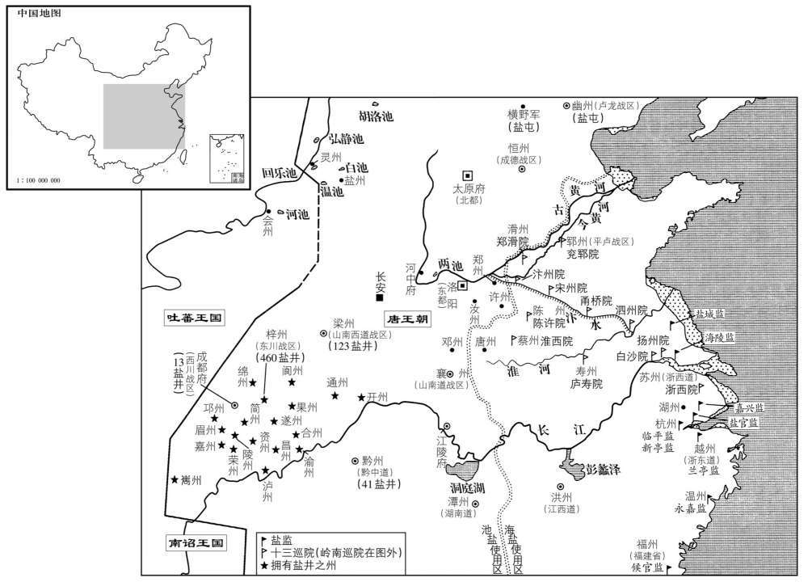
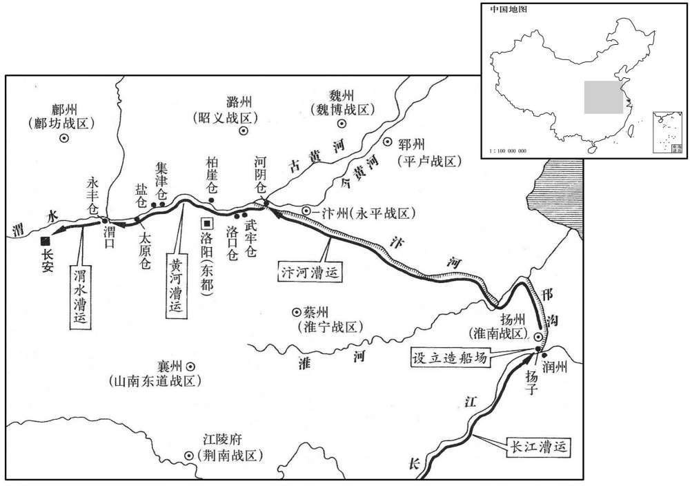
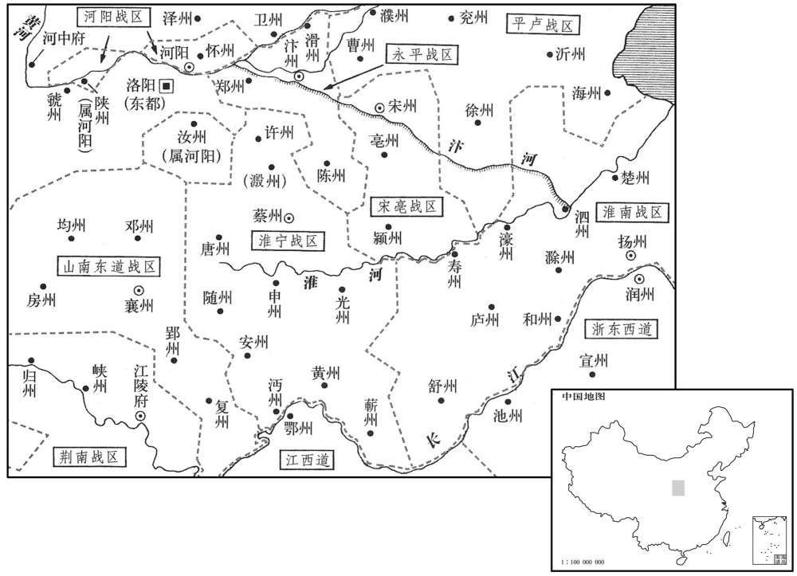
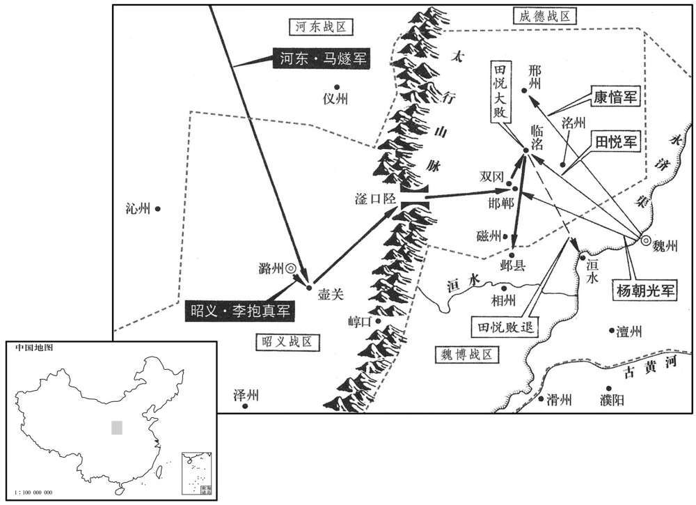
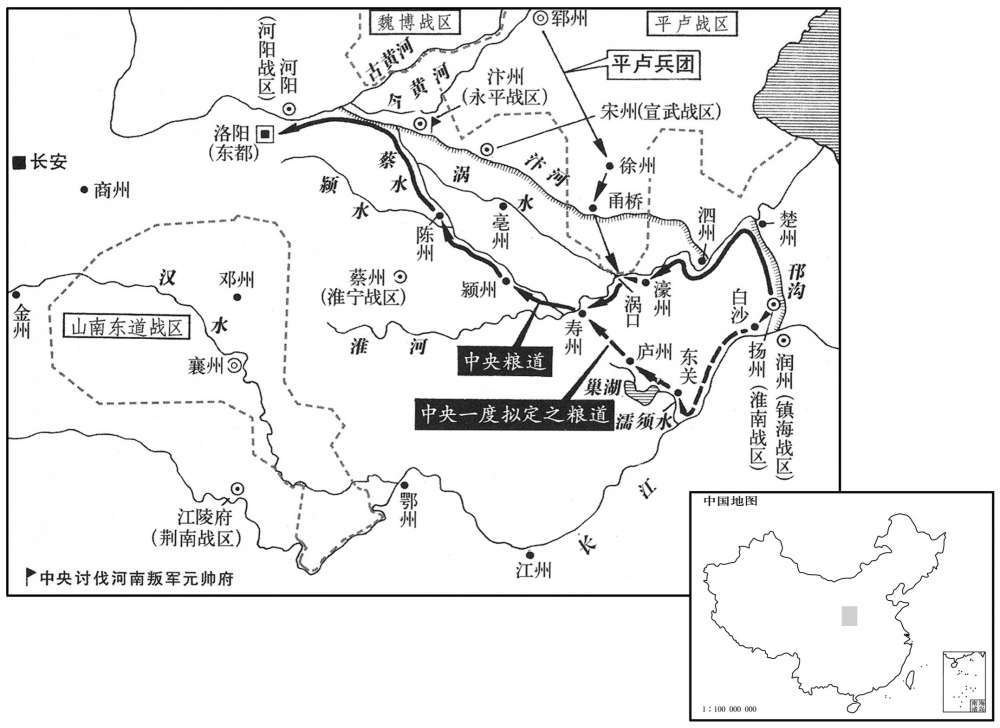
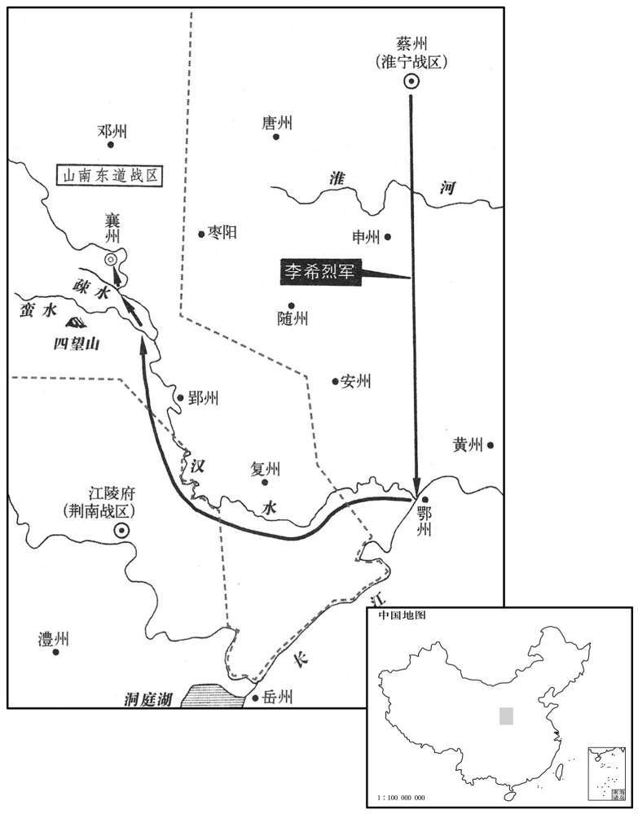
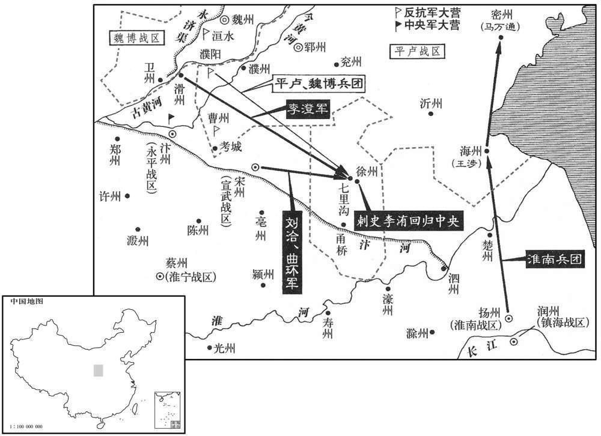
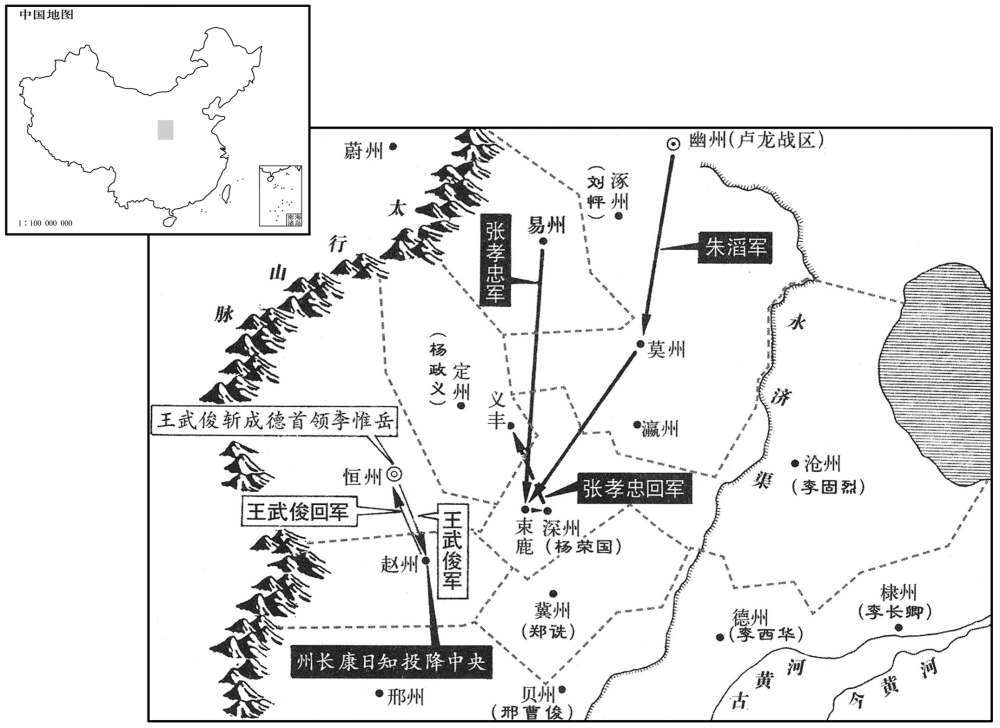
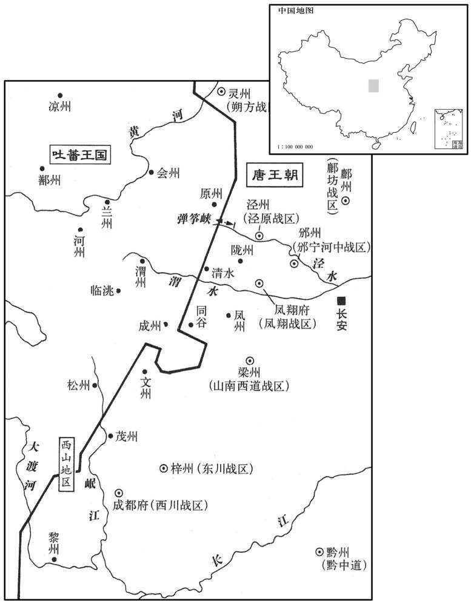

卷次与人物目录 / 卷226
资治通鉴 · 卷第二百二十六【唐纪四十二】
公元779年至公元781年 · 原文、白话与胡三省注
本页按胡注本编排保存全卷内容。白话采用本站所据译本，未可靠对应的内容另列说明；事件标题用于定位，并非原书文字。
本卷共79段原文，77段有译文对应，2段缺译或待核对。
卷第二百二十六【唐纪四十二】起屠维协洽（己未）八月，尽重光作噩（辛酉）五月，凡一年有奇。
卷首原文与注释
代宗睿文孝武皇帝下
公元779年 · 唐代宗睿文孝武皇帝大历十四年
大历十四年〔（己未、七七九）〕
上传原文的注释括号有异常，字符原样保留；无法可靠划分的段落默认全文显示。
本年记事分属相邻卷，按原书顺序分别保留：第225卷 · 第226卷。
本年事件索引（现代整理）
八月，甲辰，以道州司马杨炎为门下侍郎，〔大历十二年，杨炎以党元载贬。〕怀州刺史乔琳为御史大夫，并同平章事。〔考异曰崔佑甫与皆自门下迁中书，是时中书在上也。宪宗以后，门下在上，中书在下，不知何时升改。〕上方励精求治，〔治，直吏翻。〕不次用人，卜相于崔佑甫，〔相，息亮翻。〕佑甫荐炎器业，上亦素闻其名，故自迁谪中用之。琳，太原人，性粗率，喜诙谐，〔粗，读曰麤。喜，许记翻。〕无他长，与张涉善，涉称其才可大用，上信涉言而用之；闻者无不骇愕。
八月，甲辰（初七），德宗任命道州司马杨炎为门下侍郎，怀州刺史乔琳为御史大夫，二人都为同平章事。当时，德宗正在励精图治，用人不拘等次。德宗曾向崔甫征询择相的意见，崔甫推荐杨炎有才干，能办事。德宗平素也听说过杨炎的声名，于是便起用了贬谪中的杨炎。乔琳是太原人，生性粗疏草率，喜欢诙谐，没有别的长处。乔琳与张涉关系亲密，张涉称道乔琳的才能可能可以委以大任，德宗听信了张涉的话，便起用了乔琳。听到任命乔琳为相的人，没有不感到惊讶的。
代宗之世，吐蕃遣使求和，〔吐，从暾入声。数，所角翻。使，疏吏翻；下同。〕而寇盗不息，代宗悉留其使者，前后八辈，有至老死不得归者；俘获其人，皆配江、岭。〔使，疏吏翻。俘，方无翻。江，谓大江之南。岭，谓五岭之外。〕上欲以德怀之，乙巳，以随州司马韦伦为太常少卿，使于吐蕃，悉集其俘五百人，各赐袭衣而遣之。〔少，始照翻。袭衣，衣一袭也。衣一称为一袭。〕
代宗在位期间，吐蕃数次派遣使者，请求和好，但对唐朝的侵扰劫掠却并未止息。代宗拘留了吐蕃前后八次派来的全部使者，其中有些人直到老死，没能回归吐蕃。对俘获的吐蕃人，则统统发配到长江以南和五岭以外。德宗打算以德政安抚吐蕃，乙巳（初八），任命随州司马韦伦为太常少卿，出使吐蕃，全数召集俘虏来的五百吐蕃人，每人赐给衣服一套，将他们遣返吐蕃。
协律郎沈既济上选举议，〔唐志：协律郎，掌和律吕，辨四时之气，八风五音之节，属太常寺，正八品上。上，时掌翻。〕以为：「选用之法，三科而已：曰德也，才也，劳也。今选曹皆不及焉；〔选，须绢翻；下同。〕考校之法，皆在书判、簿历、言词、俯仰而已。〔唐择人之法有四，曰：身、言、书、判。身，取其体貌丰伟；言，取其言词辩正；书，取其楷法遒美；判，取其文理优长。簿历，所以着其资考殿最。俯仰，则观诸身之间。〕夫安行徐言，非德也；丽藻芳翰，非才也；累资积考，非劳也。执此以求天下之士，固未尽矣。今人未土著，〔夫，音扶。着，直略翻。〕不可本于乡闾；鉴不独明，不可专于吏部。臣谨详酌古今，谓五品以上及群司长官，宜令宰臣进叙，吏部、兵部得参议焉。〔长，知两翻。〕其六品以下或僚佐之属，许州、府辟用，其牧守、将帅〔守，手又翻。所类翻。〕或选用非公，则吏部、兵部得察而举之。罪其私冒不慎举者，小加谴黜，大正刑典。责成授任，谁敢不勉！夫如是，则贤者不奖而自进，不肖者不抑而自退，众才咸得而官无不治矣。今选法皆择才于吏部，试职于州郡，若才职不称，〔称，尺证翻。〕紊乱无任。〔紊，文运翻。任，音壬。〕责于刺史，则曰命官出于吏曹，不敢废也；责于伺郎，则曰量书判、资考而授之，不保其往也；〔量，音良。〕责于令史，则曰按由历、出入而行之，不知其它也。黎庶徒弊，谁任其咎！若牧守自用，则罪将焉逃！必州郡之滥，独换一刺史则革矣。如吏部之滥，虽更其侍郎无益也。〔焉，于虔翻。更，工衡翻。〕盖人物浩浩，不可得而知，法使之然，非主司之过。今诸道节度、都团练、观察、租庸等使，自判官、副将以下，皆使自择，纵其间或有情故，大举其例，十犹七全。则辟吏之法，已试于今，但未及于州县耳。利害之理，较然可观。向令诸使僚佐尽受于选曹，则安能镇方隅之重，理财赋之殷乎！」既济，吴人也。〔等使，疏吏翻；下诸使同。将，即亮翻。令，力丁翻。选，须绢翻。〕
协律郎沈既济奏上有关选任官员的议论，他认为：“选拔任用官员的办法，只有三个类别，这就是德行、才干、劳绩。现今，主持选官事务的选曹对此全未涉及；所实行的考查官员的办法，全都停留在书法文理、资历考课、言词和应对周旋等方面。行事安稳，讲话从容，这并不就是德行；撰写文章，清词丽句，这并不就是才干；长期积累下来的资望和考课成绩，这并不就是劳绩。以此三项为标准，来延招天下之士，当然是不能全部延招来的。现在居官的人并不是本地人在本地任职，所以用人不可以本地的评议为依据。由一个部门单独去审查官吏；是难以考核详明的，所以不可专门交给吏部。我慎重详细地研究了古今有关制度，认为五品以上的官员以及各部门的长官，应当让宰相提出授官与奖励的意见，而让吏部和兵部参预评论。对于六品以下的官员，或者幕僚佐吏之类人员，应该允许州、府自行任用。如有牧守、将帅选拔任用不能出于公正，吏部和兵部便可以纠察和检举他们，对偏私假冒和有失慎重加以治罪。后果轻的，予以贬官降职，后果严重的，按刑律法典治罪。如此责成百官，授以职任，谁还敢不尽力办事呢！倘若能够做到这些，那么，有德有才的官员，虽未奖掖，而他们自然会得到晋升；没有贤才的官员，虽未贬抑，而他们自然会遭受摈斥。各方面具有才干的人都得到应有的官职，就没有治理不好的事情了。现在铨选的办法，都是由吏部选择人才，而在州郡试行职任。如果才能与职任不能相称，办事紊乱不堪，责问刺史，刺史就会说，此人是由吏部委任为官的，我可不敢自行废黜；责问侍郎，侍郎就会说，这是通过考核书法公文和资历考课而授官的，我可不能保证他到州郡后一定能够胜任；责问令史，令史就会说，按察百官，是依据资历和任官升降来办事的，别的事情我就不知道了。百姓徒然以此为弊端，又由谁来承担罪责呢！假如让牧守自行任用官佐，牧守的罪责又怎会脱逃呢！假定州郡治理得很糟，只要撤换刺史一人，就能使情况改变过来了。如果吏部把任官搞滥了，就是换掉主持此事的侍郎，也是无济于事的。这是因为候选授官的人员过于繁多，不可能了解清楚。这是任官制度使事情变成这样的，并不是主管部门的过错。现在，自判官、副将以下的人员，都让各道的节度使、都团练使、观察使、租庸使等自行选任，即便其间也有徇私之事，但是大体说来，十成里犹有七成是可取的。因而自行任用官佐属吏的办法，已经试行于今，只是还没有在州县普及开来罢了。上述两种任官办法孰利孰弊的道理是显明可见的。倘若让诸使的幕僚官佐完全听受选曹的任命，那又怎能镇守各方重地，料理好那里繁重的财赋事务呢！”沈既济是吴地人。
初，衡州刺史曹王皋有治行，〔治，直吏翻。行，下孟翻。衡州治衡阳县，属湖南观察。〕湖南观察使辛京杲疾之，〔大历五年，辛京杲为湖南观察使。〕陷以法，贬潮州刺史。〔度岭为贬。〕时杨炎在道州，知其直，及入相，复擢为衡州刺史。〔相，息亮翻。复，扶又翻。〕始，皋之遭诬在治，〔在治者，谓狱吏治其事。皋以囚服在列。〕念太妃老，将惊而戚，出则囚服就辩，入则拥笏鱼，〔唐高宗给五品以上随身鱼银袋，以防召命之诈，三品以上金饰袋。天授二年，改佩鱼为龟。中宗罢龟，复给以鱼。郡王、嗣王亦佩金鱼袋。〕即于潮〔即，就也。〕以迁入贺；及是，然后跪谢告实。皋，明之玄孙也。〔曹王明，太宗之子。〕
当初，衡州刺史曹王李皋治理政务，很有成绩，湖南观察使辛京杲妒忌他，便以刑法陷害，使他被贬为潮州刺史。当时，杨炎正在道州，知道李皋是无辜的。及至杨炎入朝出任宰相，再次提升李皋为衡州刺史。当初，李皋遇到诬陷，正在经受审讯，他考虑到太妃年老，将会受惊而悲伤，所以，他出门时穿上囚服去受审，回家后便穿上朝服，手执笏板，衣垂鱼袋。李皋即将被贬到潮州，他却以升迁向太妃报喜。至此，李皋才跪在太妃面前认错，并以实情相告。李皋是李明的玄孙。
朔方、邠宁节度使李怀光既代郭子仪，邠府宿将史抗、温儒雅、庞仙鹤、张献明、李光逸功名素出怀光右，皆怏怏不服。〔邠，卑旻翻。庞，部江翻。怏，于两翻。〕怀光发兵防秋，屯长武城，军期进退，不时应令。监军翟文秀劝怀光奏令宿卫，〔【章：十二行本「卫」下有「怀光遗之」四字；乙十一行本同；退齐校同。】〕既离营，〔监，工衔翻。翟，苌伯翻。奏令，力丁翻。离，力智翻。〕使人追捕，诬以他罪，且曰：「黄萯之败，〔黄萯败事见二百二十四卷九年。萯，音倍。〕职尔之由！」尽杀之。
朔方、宁节度使李怀光替代了郭子仪的职务以后，府的宿将史抗、温儒雅、庞仙鹤、张献明、李光逸因功劳声名素来在李怀光之上，都郁郁不乐，心中不服。李怀光派兵防御吐蕃，在长武城屯驻，诸将对李怀光规定的军队进驻与退防的时间，都不按时应命。监军翟文秀劝说李怀光上奏朝廷，让诸将回朝执行宿卫任务。诸将离开军营后，李怀光派人追捕诸将，诬蔑诸将犯了别的罪过，而且说：“浑在黄失败，都是因为你们的原故！”于是将诸将全部杀掉。
九月，甲戌，改淮西曰淮宁。
九月，甲戌（初七），朝廷将淮西改称为淮宁。
西川节度使、同平章事崔宁，在蜀十余年，〔永泰元年，崔旰入成都，至是，十四年矣。〕恃地险兵强，恣为淫多，朝廷患之而不能易；至是，入朝，加司空，兼山陵使。
西川节度使、同平章事崔宁，来到蜀地十余年，仗着地势险要，兵力强盛，肆意骄奢淫逸，朝廷感到忧虑，但又无法换掉他。至此，崔宁入朝，德宗加封他为司空，兼任山陵使。
南诏王合罗凤卒，子凤迦异前死，孙异牟寻立。〔朝，直遥翻。使，疏吏番。卒，子恤翻。迦，音加。〕冬，十月，丁酉朔，吐番与南诏合兵十万，三道入寇，一出茂州，一出扶、文，〔吐，从暾入声。文州，汉阴平之地，隋为曲水县，义宁三年，分武都之曲水、正西、长松置文州。扶州，古邓至地，后周天和中，置扶州。旧本置龙涸防，与阴平接界。盖吐翻出扶、文，南诏出黎、雅也。〕一出黎、雅，〔黎州之地，汉属越嶲郡界，隋置汉源县，武后大足元年置黎州。黎州，汉沈黎县；雅州，汉严道县；境相接也。考异曰：建中实录、裴垍德宗实录，此月吐蕃三道入寇，皆在梁、益之境。而来年四月，乃云：「去冬吐蕃三道来侵：一自灵武，一自山南，一自蜀。」又云：「赞普谓韦伦曰：『今灵武之师，闻命辍矣，而山南已入扶、文，蜀师已趣灌口，追且不及。』」与此自相违。今不取。〕曰：「吾欲取蜀以为东府。」崔宁在京师，所留诸将不能御，〔将，即亮翻。〕虏连陷州、县，刺史弃城走，士民窜匿山谷。上忧之，趣宁归镇。〔趣，读曰促。〕宁已辞，杨炎言于上曰：「蜀地富饶，宁据有之，朝廷失其外府，十四年矣。宁虽入朝，全师尚守其后，贡赋不入，与无蜀同。且宁本与诸将等夷，因乱得位，威令不行。今虽遣之，必恐无功；若其有功，则义不可夺。是蜀地败固失之，胜亦不得也。愿陛下熟察。」上曰：「然则柰何﹖」对曰：「请留宁，发朱泚所领范阳兵数千人，杂禁兵往击之，何忧不克！〔泚，且礼翻，又音此。〕因而得内亲兵于其腹中，蜀将必不敢动，然后更授他帅，〔将，即亮翻。更，工衡翻。帅，所类翻。〕使千里沃壤复为国有，〔复，扶又翻，又如字，〕是因小害而收大利也。」上曰：「善。」遂留宁。
南诏王罗凤去世，他的儿子凤迦异又死在他的前头，他的孙子异牟寻即位为王。冬季，十月，丁酉朔（初一），吐蕃与南诏合兵共十万人，分三道入侵，一支军队从茂州出发，一支军队从扶州和文州出发，一支军队从黎州和雅州出发。他们声称：“我们打算拿下蜀地，作为我们东部的府。”当时，崔宁正在京城，他所留下的各个将领不能抵御敌军的进攻。敌军接连攻陷了一些州县，刺史丢下守城逃跑，百姓逃避到山谷之中。德宗忧心忡忡，催促崔宁回西川。崔宁向德宗辞行以后，杨炎对德宗说：“蜀地物产富饶，崔宁占据此地，朝廷等于失掉了自己的外府，至今已有十四年了。崔宁虽然入朝了，但西川的整个军队还在他背后支撑着，他们不向朝廷交纳贡赋，这与朝廷失去蜀地是一样的。况且，崔宁本来与西川诸将是同一等辈，乘着变乱而得到节度使的地位，威望不高，命令难行。现在，即使派他回去，恐怕也是无所建树的。倘若他取得成功，从道义上说，蜀地便是不可强夺的了。这就是说，蜀地战败，朝廷固然失去了它，蜀地取胜，朝廷还是不能得到它。希望陛下仔细考察。”德宗说：“既然如此，那怎么办才好呢？”杨炎回答：“请陛下将崔宁留在京城，另派朱所统领的范阳兵数千人，其间掺入禁军，前去进击敌军，还担心不能取胜吗！借此而得以将禁军置于西川军的心腹之中，蜀将必定不敢妄动，再任命别人为西川统帅，使蜀地的千里沃野重新为朝廷所有，这是使国家因蒙受一些较小的损害，而收取了较大的好处啊。”德宗说：“好。”于是将崔宁留在京城。
初，马璘忌泾原都知兵马使李晟功名，遣入宿卫，为右神策都将。〔璘，离珍翻。使，疏吏翻。晟，成正翻。将，即亮翻。〕上发禁兵四千人，使晟将之，发邠、陇、范阳兵五千，〔邠、陇，邠宁、陇右二镇之兵也。将，即亮翻。又音如字；下同。〕使金吾大将军安邑曲环将之，以救蜀。〔史照曰：曲，姓也。汉有代郡太守曲谦。〕东川出兵，自江油趋白，〔江油，汉、魏为无人之地，晋始置平武县，隋改为江油县，带龙州。利州管下景谷县西北有白镇城。，必驾翻。蜀人谓平川为。〕与山南兵合击吐蕃、南诏，破之。范阳兵追及于七盘，〔吐，从暾入声。七盘县，属巴州，武后久视元年置。〕又破之，遂克维、茂二州。李晟追击于大渡河外，〔大渡河，在雅州卢山县。寰宇记：大渡河，自吐蕃界经雅州诸部落，至黎州东界，流入通望界，于黎州，为南边要害之地。〕又破之。吐蕃、南诏饥寒，陨于崖谷死者八九万人。吐蕃悔，怒杀诱导使之来者。异牟寻惧，筑苴咩，〔自泸州南渡泸水六百五十里，至羊苴咩城。旧史：阳苴咩城，南去大和十余里，东北至成都二千四百里，去云南城三百里。诱，羊久翻。咩，莫者翻，又徐婢翻。史照曰：苴，音酢，又徐嗟切。咩，音养，又弥嗟切。薛能闻官军破吉浪诗：「越嶲通游客，苴咩闹聚蚊。」又西县涂中：「野色生肥羊，乡仪捣散茶。梯航经杜宇，烽火彻苴咩。」〕延袤十五里，徙居之。吐蕃封之为日东王。
当初，马妒忌泾原都知兵马使李晟的功绩与声名，派遣李晟入朝宿卫，李晟担任了右神策军都将的职务。德宗派出禁军四千人，让李晟率领；又派出州、陇州、范阳兵五千人，让金吾大将军安邑人曲环率领，以此二军前去救蜀。东川也派出军队，从江油挺进白坝，与山南节度使的军队合击吐蕃和南诏，并且打败了他们。范阳兵在七盘县追上了吐蕃和南诏的军队，再次打败了他们，并攻克了维州和茂州。李晟军在大渡河外追击敌军，又打败了他们。吐蕃和南诏的士兵因饥饿寒冷和坠落荒崖野谷死去的有八九万人。吐蕃人既后悔，又恼怒，杀掉了诱导他们前来入侵的人。异牟寻恐惧，修筑了苴咩城，连绵达十五里，徙居到那里。吐蕃封异牟寻为日东王。
上用法严，百官震悚。以山陵近，禁人屠宰；郭子仪之隶人潜杀羊，载以入城，〔隶人，仆隶之属。〕右金吾将军非裴谞奏之。或谓谞曰：「郭公有社稷大功，君独不为之地乎﹖」谞曰：「此乃吾所以为之地也。郭公勋高望重，上新即位，以为群臣附之者众，〔德宗之猜忌，裴谞于其初政已窥见之。谞私吕翻。〕吾故发其小过，以明郭公威权不足畏也。如此，上尊天子，下安大臣，不亦可乎！」
德宗执法严厉，百官无不震惊恐惧。由于代宗入葬的日期已经临近，禁止人们屠牲宰畜。郭子仪的仆从暗中杀了一只羊，装在车上，运到城中，右金吾将军裴将此事上奏。有人对裴说：“郭公对国家有再造之功，你偏偏不肯为他留些余地吗？”裴回答：“我这样做，正是要为郭公留出余地来啊。郭公勋业高，声望重，皇上刚刚即位，认为群臣中依附郭公的人很多，我故意揭发郭公的一个小小过失，以此表明郭公的威望和权力都是不足畏惧的。这样做，上可以尊崇皇上，下可以安定大臣，不也是可以的吗！”
己酉，葬睿文孝武皇帝于元陵；〔元陵，在京兆富平县西北二十五里檀山。〕庙号代宗。将发引，上送之，见辒辌车不当驰道，稍指丁未之间，〔引，羊晋翻。辒，音温。辌，音凉。考异曰：按车指丁未之间，则行出道外矣。盖出门，欲斜就道西，不当道中间行耳。〕问其故，有司对曰：「陛下本命在午，不敢冲也。」上哭曰：「安有枉灵驾而谋身利乎！」命改辕直午而行。肃宗、代宗皆喜阴阳鬼神，〔喜，许记翻。〕事无大小，必谋之卜祝，故王屿、黎干皆以左道得进。上雅不之信，〔玙，音余。雅，素也。〕山陵但取七月之期〔礼：天子七月而葬。〕事集而发，不复择日。〔复，扶又翻；下谋复同。〕
己酉（十三日），将睿文孝武皇帝葬于元陵，庙号代宗。在将要出殡的时候，德宗亲自把灵车送了出来，看到灵车不是在道路中间行走，而是稍微偏向道路外边，便询问此中的原故。主管部门答说：“陛下本命在午，指向正中，所以不敢冲犯。”德宗哭着说：“哪有委屈灵车来谋求自身好处的呢！”于是命令灵车改向，对着午方即在道路中间行进。肃宗和代宗都喜好阴阳鬼神，无论事情大小，必定要求占问卜，所以王屿和黎干都是靠着左道得以升官的。德宗素来不相信这一套，代宗入葬山陵的日期只依礼法定在七月期满之时，诸事准备停当便出殡下葬，不再选择日期。
十一月，丁丑，以晋州刺史韩滉为苏州刺史、浙江东‧西观察使。〔滉，呼广翻。使，疏吏翻。〕
十一月，丁丑（十一日），德宗任命晋州刺史韩为苏州刺史、浙江东西观察使。
乔琳衰老耳聩，〔聩，五怪翻。〕上或时访问，应对失次，所谋议复疏阔。壬午，以琳为工部尚书，罢政事。上由是疏张涉。〔乔琳，涉所荐也。尚，辰羊翻。〕
乔琳年老体衰，耳朵重听，德宗有时候征询他的意见，他的回答有失条理，所谋划计议的内容又很疏陋迂阔。壬午（十六日），德宗任命乔琳为工部尚书，免去同平章事。德宗自此和张涉也疏远了。
杨炎既留崔宁，二人由是交恶。炎托以北边须大臣镇抚，癸巳，以京畿观察使崔宁为单于‧镇北大都护、朔方节度使，镇坊州。〔单，音蝉。〕以荆南节度使张延赏为西川节度使。又以灵盐节度都虞候醴泉杜希全知灵、盐州留后；代州刺史张光晟知单于‧振武等城，绥‧银‧麟‧胜州留后；炎欲夺权，且窥其所为，令三人皆得特奏事，仍讽之使伺宁过失。〔令，力丁翻。伺，相吏翻。考异曰：旧传：「初，宁代乔琳为御史大夫、平章事，宁以为选择御史当出大夫，不谋及宰相，乃奏请以李衡、于结等数人为御史。杨廾大怒，其状遂寝。炎又数谗毁刘晏，宁又救解之，因此大怒。其年十月，南蛮大至，上遣宁还镇。炎惧怨己，入蜀难制，奏止之。」按宁为御史大夫，在吐蕃、南蛮寇蜀后。旧传恐误。〕
杨炎把崔宁留在京城以后，两人的关系自此便恶化起来。杨炎托称北部边防需要大臣镇守抚慰，癸巳（二十七日），德宗任命京畿观察使崔宁为单于镇北大都护、朔方节度使，镇守坊州。任命荆南节度使张延赏为西川节度使。又任命灵盐节度都虞侯醴泉人杜希全知灵、盐二州留后，任命代州刺史张光晟知单于、振武等城及绥、银、麟、胜各州留后，任命延州刺史李建徽知、坊、丹三州留后。当时，崔宁已经出镇，不应当再设置留后，杨炎打算削夺崔
十二月，乙卯，立宣王诵为皇太子。
十二月，乙卯（十九日），德宗册立宣王李诵为皇太子。
旧制，天下金帛皆贮于左藏，太府四时上其数，比部覆其出入。〔唐制：太府掌廪藏、财货出纳、比部掌句会。蜀注曰：唐制：天上财赋皆纳于左藏，太府四时以数闻，尚书比部覆校其出入。贮，丁吕翻。藏，徂浪翻。上，时掌句会。比，音毗。〕及第五为度支、盐铁使，〔琦，音奇。度，徒洛翻。使，疏吏翻。〕时京师多豪将，求取无节，琦不能制，〔将，即亮翻。乃奏尽贮于大盈内库，〔百宝大盈库，始于玄宗朝，详见二百二十八卷德宗建中四年十月注。〕使宦官掌之，天子亦以取给为便，故久不出。由定以天下公赋为人君私藏，有司不复得窥其多少，校其赢缩，〔藏，徂浪翻。复，扶又翻。赢，有余也。缩，不足也。〕殆二十年。宦官领其事者三百余员，皆蚕食其中，蟠结根据，牢不可动。杨炎顿首于上前曰：「财赋者，国之大本，生民之命，重轻安危，靡不由之，是以前世皆使重臣掌其事，犹或耗乱不集。〔耗，当读曰眊，或读如字。〕今独使中人出入盈虚，大臣皆不得知，政之蠹敝，莫甚于此。请出之以归有司。度宫中岁用几何，〔度，徒洛翻。〕量数奉入，〔量，音良。〕不敢有乏。。如此，然后可以为政。」上即日下诏：「凡财赋皆归左藏，一用旧式，岁于数中择精好者三、五千匹，进入大盈。」〔下，遐稼翻。考异曰：德宗实录作「三、五十万匹」，今从建中实录。〕炎以片移人主意，议者称之。
根据原有的制度，全国的钱帛都收归左藏贮存，由太府按季节上报钱帛数额，由比部复核钱帛的收支情况。及至第五琦担任度支、盐铁使，当时京城中的豪帅很多，索取赏赐毫无节制，第五琦不能制止，便上奏将左藏钱帛悉数贮存于大盈内库，并让宦官管理，皇上也认为如此取用方便，所以贮存的钱帛长期有能再由内库搬出。从此，国家的财赋收入成了皇上的私人储藏，主管部门不能得知数量多少，无法核查盈亏情况，几乎达二十年之久。掌管内库的宦官有三百余人，都在蚕食内库的财富，其势力盘根错节，牢固不可动摇。杨炎在德宗面前叩头说：“财赋是国家的根本，百姓的命脉，国家的盛衰安危，无不与财赋相关。所以，以前各朝都以重臣掌管财赋，即便如此，有时还会有财赋损耗，管理混乱的情况发生。现在，专门让宦官掌握财赋的收支盈亏，大臣都无法知道，朝政的蛀蚀败坏，没有比这更为严重的了。请将全国的财赋搬出内库，以便交还给主管部门管理。推算好宫中每年需用多少，悉数进上，决不敢有所缺少。能够这样，此后才能办好朝政。”德宗当日颁下诏书：“一切财赋都交还左藏，完全采用原有的法式，每年在财赋数额内挑选出精良的布帛三五千匹，进献到大盈内库。”杨炎只用一席话便改变了皇上的主意，议事的人们都称赞他。
丙寅晦，日有食之。
丙寅晦（三十日），出现日食。
湖南贼帅王国良阻山为盗，〔帅，所类翻。〕上遣都官员外郎关播招抚之。〔唐都官郎，掌俘隶簿录、给衣粮、医药而理其诉冤。〕辞行，上问以为政之要，对曰：「为政之本，必求有道贤人与之为理。」上曰：「朕比以下诏求贤，〔比，毗至翻，近也。「以」，当作「已」。〕又遣使臣广加搜访，庶几可以为理乎！」悦。
两版字句有差异，建议核对原文。
湖南赋寇首领王国良依山为盗，德宗派遣都官员外郎关播前去招抚。辞行之际，德宗和关播询问办好政事的关键，关播回答道：“办好政事的根本，在于陛下必须寻找有道贤人，并与他们一齐治理国家。”德宗说：“我近来已经颁下诏书，寻求贤才，还派出使者，多方面地搜罗寻访，这大概可以使国家政治修明了吧！”关播回答说：“下诏寻求和使者荐举，只能得到一些凭着文词追求仕禄的人物罢了，有道贤人哪里会随着一纸公文而被推举、先拔出来呢！”德宗闻此大悦。
崔佑甫有疾，上令肩舆入中书，或休假在第，〔令，力丁翻。假，古讶翻。〕大事令中使咨决。
崔甫身患疾病，德宗让他坐着肩舆到中书省。有时，崔甫正在家中休假，发生了重大的事情，德宗便命中使到崔甫家中咨询，然后做出决定。
译本中未与胡注本可靠对应的内容
以下另列供核对版本差异，不并入胡注本正文。
译本所附古文
宁的权力，并且暗中察看他的活动，便令杜希全等三人都可以特别奏事，同时
译本白话
暗示他们伺察崔宁的过失。
原书衔接
德宗神武孝文皇帝一〔讳适，代宗长子也。谥法：谏争不威曰德，言不威拒谏也；执义扬善曰；德，言称人之善也。〕
公元780年 · 唐德宗神武孝文皇帝建中元年
建中元年〔（庾申、七八）〕
上传原文件年头的数字有误；按本卷年号与相邻年份定位为780年，原字保留。
上传原文的注释括号有异常，字符原样保留；无法可靠划分的段落默认全文显示。
本年事件索引（现代整理）
- 德宗改元并颁行两税法
- 唐初租庸调制废弛，杨炎建议实行两税法
- 杨炎罢刘晏转运诸使，天下钱谷归金部仓部
- 田悦煽动被罢军士，魏博军怨恨朝廷
- 崔佑甫病重，杨炎独揽政务修城浚渠
- 刘晏被贬忠州刺史
- 李抱真任泽潞节度使
- 杨炎谋筑原州，刘文喜据泾州拒诏
- 张涉受贿事发获释，辛京杲因杀人被贬
- 杨炎复置度支转运使统领钱谷
- 刘文喜据泾州叛乱并向吐蕃求援
- 韦伦归还吐蕃俘虏，吐蕃遣使入贡
- 德宗拒收四节日贡献并以充租赋
- 韦伦任太常卿，再次出使吐蕃
- 朱泚围困泾州，刘海宾等杀刘文喜
- 李正己闻泾州捷报后更加恐惧
- 门下侍郎崔佑甫去世
- 桑道茂建议修筑奉天城以备离宫之厄
- 回纥内乱，顿莫贺杀登里可汗自立
- 曹王皋招降邵州贼帅王国良
- 德宗遥尊生母沈氏为皇太后
- 庾准构陷刘晏，德宗密令赐死
- 安史之乱后户口凋残，刘晏主持转运理财
- 刘晏善于理财用人，严格分任吏员
- 刘晏以爱民理财，依丰歉及时蠲免救助
- 刘晏推行榷盐法以充军国之用
- 刘晏改造漕运船仓，岁运百余万斛
- 刘晏勤勉决事，从不积压政务
- 张光晟杀回纥使者董突等九百余人
- 朱泚兼任中书令，姚令言任泾原留后
- 德宗追赠太后亲属官爵，颁发告身一百二十七通
- 德宗不信时日禁忌，下令修缮宣政殿廊
- 路嗣恭按察贪官，州县始畏朝典
- 德宗因文臣赃败而重新疑忌宦官武将
- 高参请分遣沈氏访求德宗生母
- 朝集使入朝访察时政民情
- 德宗整定公主婚礼，并嫁九位宗女
- 韦伦再至吐蕃，吐蕃遣使入贡
- 德宗册太子生母王氏为淑妃
- 唐朝税户、兵籍及税钱谷数统计

本年形势与背景参考图

本年形势与背景参考图
春，正月，丁卯朔，改元。群臣上尊号曰圣神文武皇帝；〔上，时掌翻。〕赦天下。始用杨炎议，「命黜陟使与观察、刺史约百姓丁产，定等级，改作两税法。〔杨炎作两税法，夏输无过六月，秋输无过十一月，视大历十四年垦田数为定。〕比来新旧征科色目，一切罢之；〔比，毗至翻。比来，犹云近来也。〕二税外辄率一钱者，以枉法论。」
春季，正月，丁卯朔（初一），更改年号。群臣为德宗进献尊号，称作圣神文武皇帝。大赦天下。德宗开始采用杨炎的建议，命令黜陟使和观察使、刺史“估量百姓的人丁财产，定出等级，改变旧税法，实行两税法。将近年来原有和新增的各项征收名目一律取消。在两税以外，就是向百姓再收敛一个铜钱，便以违法论处。”
唐初，赋敛之法曰租。庸、调，有田则有租，有身则有庸，有户则有调。玄宗之末，版籍浸坏，多非其实。及至德兵起，所在赋敛，迫趣取办，〔敛，力赡翻。调，徒吊翻。趣，读曰促。〕无复常准。〔复，扶又翻，又音如字。〕赋敛之司增数而莫相统摄，〔统，他综翻，俗从上声。〕各随意增科，自立色目，新故相仍，不知纪极。民富者丁多，率为官、为僧以免课役，而贫者丁多，无所伏匿，故上户优而下户劳。吏因缘蚕食，旬〔【章：十二行本「旬」上有「民」字；乙十一行本同；张校同，云无注本亦无。】〕输月送，不胜困弊，〔胜，音升。〕率皆逃徙为浮户，其土著百无四五。〔着，直略翻。〕至是，炎建议作两税法：先计州县每岁所应费用及上供之数而赋于人，量出以制入。户无主、客，以见居为簿；人无丁、丁、中，以贫富为差；〔州、县有主户、客户。天宝三载，令民十八以上为中男，三十三以上成丁。量，音良。见，贤遍翻。〕为行商者，在所州县税三十之一，使与居者均无侥利。〔言居行皆无侥幸之利也。侥坚翻。〕居人之税，秋、夏两征之。其租、庸、调杂傜悉省，皆总统于度支。上用其言，因赦，令行之。
在唐朝的初期，征收赋税的办法称作租、庸、调，有田土便要交租，有人丁便要服庸，有户口便要纳调。在玄宗当政末期，户籍逐渐遭到破坏，大多已经与实际不符。到了至德年间，战事四起，到处征收赋敛，逼迫催促，再也没有一定的标准。征收部门增加了，可是互相没有隶属关系而是各自随意增加课税，
巧立名目，新老名目相互重复，毫无限度。富足人家人丁多，大抵作官当僧人
得以免除赋役；而贫困人家人丁多，全无隐瞒逃避的去处，所以上等户优游而
下等户劳瘁。征税的吏员又乘机侵吞，百姓十天输赋一月送税，经受不了如此
初，左仆射刘晏为吏部尚书，杨炎为侍郎，不相悦。〔射，寅射翻。尚，辰羊翻。〕元载之死，晏有力焉。〔事见上卷代宗大历十三年。载，祖亥翻，又如字。〕及上即位，晏久典利权，众颇疾之，多上言转运使可罢；〔多上，时掌翻。使，疏吏翻。〕又有风言晏尝密表劝代宗立独孤妃为皇后者。〔风言，谓得于风闻而言之者也。〕杨炎为宰相，欲为元载报仇，因为上流涕言：「晏与黎干、刘忠翼同谋，〔干、忠翼死于大历十四年，事见上卷。为，于伪翻。相，息量翻。〕臣为宰相不能讨，罪当万死。」崔佑甫言：「兹事暧昧，陛下已旷然大赦，不当复究寻虚语。」〔暧，音爱。复，扶又翻。〕炎乃建言：「尚书省，国政之本，比置诸使，分夺其权，〔尚，辰羊翻。比，毗至翻。〕今宜复旧。」上从之。甲子，〔【张：「子」作「午」。按是月无甲子，恐是丙子，否则戊子。〕诏天下钱谷皆归金部、仓部，〔唐志：金部掌天下库藏出纳之数，京市、互市、和市、宫市、交易之事。仓部掌天下库储，出纳、租税、禄粮、仓廪之事。〕罢晏转运、租庸、青苗盐铁等使。〔考异曰：建中实录曰：「初，大历中，上居东宫，贞懿皇后方为妃，有宠，生韩王回。帝又钟爱，故阉官刘清潭、京兆尹黎干与左右嬖幸欲立贞懿为皇后，且言韩王所居获黄蛇，以为符，动摇储宫，而晏附其谋，冀立殊效，图为宰辅。时宰臣元载独保护上，以为最长而贤，且尝有功，义不当移。王缙亦谓人曰：『黠者也。今所图无乃过黠乎！』后其议渐定。贞懿卒不立。上憾之。至是，以晏大臣而附邪为奸，不去将为乱。托陈奏不实，谪为忠州刺史。」沉既济、杨炎所荐，盖附炎为说。今从传。〕
当初，左仆射刘晏担任吏部尚书，杨炎担任侍郎，两不悦服。元载被杀，刘晏起了很大的作用。及至德宗即位以后，刘晏长期执掌财利的权柄，众人颇为妒忌他，多上言称转运使一职应当罢去，又有流言说刘晏曾经秘密上表劝说代宗册立独孤妃为皇后。杨炎出任宰相以后，打算为元载报仇，因而在德宗面前流着眼泪说：“刘晏与黎干和刘忠翼同谋，我作为宰相，不能声讨他，真是罪该万死。”崔甫说：“这件事并未搞清楚，既然陛下已经以广阔的襟怀实行了大赦，就不应该再来追究这些不实之辞。”于是杨炎又提出建议：“尚书省是国家大政的根本，近来设置诸使职，分掉和侵夺了尚书省的权力，现在应当恢复原有的制度。”德宗听从了杨炎的建议。甲子（疑误），诏令全国钱谷都要交给金部、仓部管理，免除了刘晏转运、租庸、青苗、盐铁等使职。
二月，丙申朔，命黜陟使十一人分巡天下。〔黜陟使，始置于太宗贞观八年。〕先是，魏博节度使田悦事朝廷犹恭顺，〔先，悉荐翻。朝，直遥翻。〕河北黜陟使洪经纶，〔考异曰：建中实录，黜陟使十一人，而无名。德宗实录有十人名，而无河北道及经纶名。盖脱误也。〕不晓时务，闻悦军七万人，符下，罢其四万，令还农。〔下，遐稼翻、令，力丁翻。〕悦阳顺命，如符罢之。既而集应罢者，激怒之曰：「汝曹久在军中，有父母妻子，今一旦为黜陟使所罢，将何资以自衣食乎！」众大哭。悦乃出家财以赐之，使各还部伍。于是军士皆德侻而怨朝廷。〔为田侻连诸镇之兵以拒命张本。〕
二月，丙申朔（初一），德宗命令黜陟使十一人分道巡查全国。在此之前，魏博节度使田悦事奉朝廷还算恭顺，河北黜陟使洪经纶不通晓时务，听说田悦军有七万人，便发下军符，要求裁减四万人，命他们解甲归农。田悦佯装从命，按军符减员。不久，田悦召集应当裁减的士兵，激怒他们说：“你们长期在军中，都有父母、妻子、儿女，现在一下子被黜陟使裁减了，你们拿什么来养活自己呢！”大家放声大哭起来。田悦于是拿出家财，分给士兵，让他们都回到军中。由此，士兵都感谢田悦的恩德而怨恨朝廷。
崔佑甫以疾，多不视事；杨炎独任大政，专以复恩雠为事，奏用元载遗策城原州，〔任，音壬‧载，祖亥翻，又音如字。元载策见二百二十四卷代宗大历八年。〕又欲发两京、关内丁夫浚丰州陵阳渠，以兴屯田。〔陵阳渠，在丰州九原县。〕上遣中使诣泾原节度使，使移军原州，以四镇、北庭留后刘文喜为别驾。〔为刘文喜以泾州拒命张本。〕京兆尹严郢奏：「按朔方五城，旧屯沃饶之地，自丧乱以来，〔郢，以井翻。丧，息浪翻。〕人功不及，因致荒废，十不耕一。若力可垦辟，不俟浚渠。今发两京、关辅人于丰州浚渠营田，计所得不补所费，而关辅之人不免流散，是虚畿甸而无益军储也。」疏奏，不报。〔疏，所据翻。〕既而陵阳渠竟不成，弃之。
两版字句有差异，建议核对原文。
崔甫因为身染疾病，多不管事，杨炎独揽朝廷大权，专门去做报恩复仇的事情。他上奏采用元载生前留下的计划筑原州城，又打算征发长安、洛阳和关内的丁夫疏浚丰州陵阳渠，以便兴办屯田。德宗派遣中使来到泾原节度使段秀实处，询问此举利弊如何，段秀实认为：“现在边疆防御还很空虚，不适宜兴办事功，召引敌人。”杨炎大怒，认为这是有意阻止自己，便征召段秀实担任司农卿。丁未（十二日），德宗让宁节度使李怀光兼任四镇、北庭行营、泾原节度使，并让他移军原州驻扎，又任命四镇、北庭留后刘文喜为别驾。京兆尹严郢奏称：“据悉，朔方五城过去本是肥沃丰饶的土地，自从国家遭受变乱以来，由于无暇投入人力，因而导致土地荒废，耕种的不足十分之一。如果有人力再将这里开垦出来，则不必等待疏通陵阳渠。现在征发长安、洛阳、关辅百姓到丰州疏浚渠道，经营屯田，算起来，所得到的不足以补赏所耗费的，而且关辅百姓不免流亡离散。这样做，是使京城辖区空虚，而对军事储备却毫无补益。”此疏奏上，德宗不予答复。后来，陵阳渠到底没能修成，将它废弃了。
上用杨炎之言，托以奏事不实，己酉，贬刘晏为忠州刺史。〔旧志：忠州，京师南二千一百二十二里。〕
德宗采纳杨炎的主意，借口上奏的事情与实际不符，己酉（十四日），将刘晏贬为忠州刺史。
癸丑，以泽潞留后李抱真为节度使。〔为李以泽潞为国藩翰张本。〕
癸丑（十八日），德宗任命泽潞留后李抱真为该镇节度使。
杨炎欲城原州以复秦、原，〔秦、原，谓秦州、原州。〕命李怀光居前督作，朱泚、唯宁各将万人翼其后。〔泚，且礼翻，又音此。将，即亮翻，又音如字。〕诏下泾州为城具，〔下，遐稼翻。为筑城之具也。〕泾之将士怒曰：「吾属为国家西门之屏，十余年矣。〔将，即亮翻。屏，必郢翻，蔽也。〕始居邠州，甫营耕桑，有地着之安。徙屯泾州，〔邠，卑旻翻。着，直略翻。徙泾州见二百二十四卷大历三年。〕披荆榛，立军府；坐席未暖，又投之塞外。〔先弃原州不守，故云投之塞外。〕吾属何罪而至此乎！」李怀光始为邠宁帅，即诛温儒雅等，〔事见大历十四年。帅，所类翻；下同。〕军令严峻；及兼泾原，诸将皆惧，曰：「彼五将何罪而为戮﹖〔五将，即史抗、温儒雅、庞仙鹤、张献明、李光逸。将，即亮翻。〕今又来此，吾属无能忧乎！」刘文喜因众心不安，据泾州，不受诏，上疏复求段秀实为帅，不则朱泚。〔上，时掌翻。疏，所据翻。复，扶又翻，或如字。不，读曰否，又读如字。泚，且礼翻，又音此。〕癸亥，以朱泚兼四镇、北庭行营、泾原节度使，代怀光。〔使，疏吏翻。〕
杨炎打算修筑原州城，以便恢复秦州和原州，命令李怀光在前面监督施工，朱和崔宁各带领一万人分布两侧，在后护卫。有诏书命令泾州将士准备筑城的工具，泾州将士愤怒地说：“我辈充当国家西大门的屏障，已经有十多年了。一开始，我辈屯驻州，才将农桑各业经营起来，可以定居下来了，便又移军屯驻泾州，披荆斩棘，建立军府；在泾州还没有把座位坐暖，又被丢到塞外。我辈到底犯了什么罪，以至非要遭受如此对待呢！”李怀光刚刚当上宁节帅，便杀掉了温儒雅等人，军令十分严厉。及至李怀光兼任泾原节帅，各个将领都很恐惧，他们说：“那五位将领到底犯了什么罪，而要遭受杀戮？现在，李怀光又来到泾州，我辈怎能不忧虑呢！”刘文喜乘大家心中不安，占据了泾州，不服从诏命，还上疏要求再派段秀实来当泾州节帅，如果不能派段秀实来，便派朱来。癸亥（二十八日），德宗任命朱兼任四镇、北庭行营、泾原节度使，替代李怀光。
三月，翰林学士、左散骑常侍张涉受前湖南观察使辛京杲金，事觉；上怒，欲置于法。李忠臣以检校司空、同平章事、奉朝请，〔散，悉亶翻。骑，奇寄翻。校，古效翻。朝，直遥翻。〕言于上曰：「陛下贵为天子，而先生以乏财犯法，以臣愚观之，非先生之过也。」〔张涉先侍读东宫，故李忠臣言以为先生。〕上意解，辛未，放涉归田里。辛京杲以私忿杖杀部曲，有司奏京杲罪当死，上将从之。李忠臣曰：「京杲诸父兄弟皆战死，独京杲至今尚存，臣故以为当死久矣。」上悯然，左迁京杲诸王傅。忠臣乘机救人，多此类。
三月，翰林学士、左散骑常侍张涉收受前湖南观察使辛京杲钱财的事情被发觉，德宗很生气，准备依法惩办。李忠臣身为检校司空、同平章事、奉朝请，向德宗进言说：“陛下贵为天子，然而，天子的老师却因为缺少钱财而犯法，依我愚见，这并不是老师的过错啊。”德宗的态度缓和下来。辛未（初六），将张涉罢免还乡。辛京杲因私忿用杖打死部曲，有关部门奏称辛京杲犯了死罪，德宗打算按有关部门的意见办。李忠臣说：“辛京杲早就该死了。”德宗问他此话怎讲，李忠臣说：“辛京杲的父亲和兄弟都战死了，只有辛京杲至今还活着，所以我认为辛京杲早就该死了。”德宗心怀怜恤之情，将辛京杲降职为诸王师傅。李忠臣利用时机，挽救人命，大多如此。
杨炎罢度支、转运使，〔度，徒洛翻。〕命金部、仓部代之。既而省职久废，〔谓尚书省诸司失其职已久。〕耳目不相接，莫能振举，天下钱谷无所总领。癸巳，复以谏议大夫韩洄为户部侍郎、判度支，以金部郎中万年杜佑权江、淮水陆转运使，皆如旧制。〔复，扶又翻，或如字。诸杜居城南，时号「城南韦、杜，去天尺五。」户贯则万年。〕
杨炎罢除了度支、转运使，命金部、仓部来代替。不久，由于尚书省各部门的职任久已荒废，部门之间不通声气，未能把事办好，无法将全国的钱粮统一掌管起来，癸巳（二十八日），德宗再次任命谏议大夫韩洄为户部侍郎、判度支，任命金部郎中万年人杜佑暂时代理江、淮水陆转运使，都和原来的制度一样。
刘文喜又不受诏，欲自邀旌节；夏，四月，乙未朔，据泾州叛，遣其子质于吐蕃以求援。〔质，音致。〕上命朱泚、李怀光讨之，〔泚，且礼翻，又音此。〕又命神策军使张巨济将禁兵二千助之。〔使，疏吏翻。将，即亮翻，又音如字。〕
刘文喜又不服从诏命，准备自求节度使的旌节。夏季，四月，乙未朔（初一），他占据泾州叛乱，打发他的儿子到吐蕃为人质，以求援助。德宗命令朱、李怀光前去讨伐他，还命令神策军使张巨济带领禁军二千人前往协助。
吐蕃始闻韦伦归其俘，〔吐，从暾入声。帝初即位，欲以德怀吐蕃，遣伦归代宗朝所获之俘。〕不之信，及俘入境，各还部落，称：「新天子出宫人，放禽兽，英威圣德，洽于中国。」吐蕃大悦，除道迎伦。赞普即发使随伦入贡，且致赙赠。〔致代宗之赙赠也。赙，音附。〕癸卯，至京师，上礼接之。既而蜀将上言：「吐蕃豺狼，所获俘不可归。」〔将上，上即亮翻，下时掌翻。〕上曰：「戎狄犯塞则击之，服则归之。击以示威，，归以示信。威信不立，何以怀远！」悉命归之。〔又悉归剑南所获之俘。考异曰：建中实录曰：「及境，境上守陴者焚楼橹、弃城壁而去。初，吐蕃既得河、湟之地，土宇日广，守兵劳弊，以国家始因用胡为边将而致祸，故得河、陇之士约五十万人，以为非族类也，无贤愚，莫敢任者，悉以为婢仆，故其人苦之。及见伦归国，皆毛裘蓬首，窥觑墙隙，或搥心陨泣，，或东向拜舞，及密通章疏，言蕃之虚实，望王师之至若岁焉。君子曰，惜乎，人心之可乘也。若逾代之后，斯人既没，后生安于所习，难秋哉！」此恐沈既济之溢美，且欲附杨炎复河、陇之说耳。今不取。〕
吐蕃人最初听说韦伦将俘虏送回来时，并不相信。及至被俘者回到吐蕃，各自返还部落，声称“新皇上将宫女释放出宫，将禽兽放生，他的英风威声和圣明仁德，真是遍及中原。”吐蕃人听了很高兴，便打扫道路，迎接韦伦。吐蕃赞普立即派出使者，跟随韦伦入朝进贡，并且赠送助办丧事的物品。癸卯（九月），吐蕃使者来到京城，德宗按照礼节接待了他。不久，蜀地的将领向上建言：“吐蕃人豺狼成性，我方捉获的俘虏不应放还。”德宗说：“戎狄侵犯边疆，我们便打击他们；他们服从朝廷，我们便归还俘虏。打击他们，是为了显示朝廷的威严；归还俘虏，是显示朝廷的信义。假如不能将威严和信义树立起来，又怎能安抚边远各族呢！”德宗命令将吐蕃俘虏悉数放还。
代宗之世，每元日、冬至、端午、生日，州府于常赋之外竞为贡献，贡献多者则悦之。武将、奸吏，缘此侵渔下民。〔自代宗迄于五代，正、至端午、降诞，州府皆有贡献，谓之四节进奉。将，即亮翻。〕癸丑，上生日，〔上生于天宝元年四月十九日，抔置节名。〕四方贡献皆不受。李正己、田悦各献缣三万匹，〔缣，并丝缯也。〕上悉归之度支以代租赋。〔度，徒洛翻。〕
代宗在位时期，每当大年初一、冬至、端午、皇上的生日，州府长官争着在定额赋税之外争着向朝廷进贡，进贡多的，便能得到皇上的欢心，武将和奸滑的官吏便借此侵吞百姓的财物。癸丑（十九日），是德宗的生日，德宗对各地进贡概不接受。李正己、田悦各献细绢三万匹，德宗悉数拨归度支，以此代替两处应纳的租税。
五月，戊辰，以韦伦为太常卿；乙酉，复遣伦使吐蕃。〔复，扶又翻。〕伦请上自为载书，〔载书，盟誓之书。〕与吐蕃盟；杨炎以为非敌，请与郭子仪辈为载书以闻，令上画可而已，从之。〔令，力丁翻。〕
五月，戊辰（初五），德宗任命韦伦为太常卿。乙酉（二十二日），再次派遣韦伦出使吐蕃。韦伦请求德宗亲自撰写盟书，与吐蕃结盟。杨炎认为德宗与吐蕃赞普地位不对等，请求同郭子仪等人撰写盟书上报德宗，再由德宗批准，德宗听从了他的建议。
朱泚等围刘文喜于泾州，〔泚，且礼翻，又音此。〕杜其出入，而闭壁不与战，久之不拔。天方旱，征发馈运，内外骚然，朝臣上请赦文喜以苏疲人者，不可胜纪。〔朝，直遥翻。上，时掌翻。胜，音升。〕上皆不听，曰：「微呩不除，何以令天下！」文喜使其将刘海宾入奏，〔呩，鱼列翻。将，即亮翻。〕海宾言于上曰：「臣乃陛下藩邸部曲，〔帝初以雍王为天下兵马元帅，讨史朝义，凡在行营，皆部曲也。〕岂肯附叛臣，必为陛下枭其首以献。〔为，于伪翻。枭，坚尧翻。〕但文喜今所求者节而已，愿陛下姑与之，文喜必怠，则臣计得施矣。」上曰：「名器不可假人，〔孔子之言。〕尔能立效固善，我节不可得也。」使海宾归以告文喜，而攻之如初。减御膳以给军士，城中将士当受春服者，赐予如故。〔予，读曰与。〕于是众知上意不可移。时吐蕃方睦于唐，不为发兵，〔为，于伪翻。〕城中势穷。庚寅，海宾与诸将共杀文喜，传首，〔考异曰：邠志曰：「诏李怀光、朱泚并军诛之，师围泾城，数月不拔。文喜使其子求救于吐蕃。蕃众将至，二将议退军以避之。都游弈使韩游緕争之曰：『西戎若来，泾众必变，义不为文喜没身于戎虏。』秋七月，西蕃游骑登高，麾泾人。泾人果曰：『始吾为文喜求节度耳，王师致讨，困则归之，安能赤土涂面为异方之人乎！』刘海宾因之杀文喜，以众降泚。泚无所戮，泾人德之，萌泚之乱亦自此始。」按是时吐蕃通好，无入援文喜事。又实录此月泾州平，而邠志云七月西蕃至，皆相违。今从建中实录。〕而原州竟不果城。
朱等将刘文喜包围在泾州，堵塞了泾州出入的通道，但又关闭营垒，不与刘文喜交战，长时间不能攻克泾州。当时正值天旱，征发粮草，输送给养，使得朝野内外骚动不安，朝中诸臣上书请求赦免刘文喜，以便使疲乏困顿的百姓得到休息的，多得难以记载。德宗全不听从，他说：“连个小小的忤逆之臣都不能铲除，还拿什么来号令全国！”刘文喜让部将刘海宾入朝上奏。刘海宾对德宗说：“我是陛下在藩邸时的部曲，怎肯依附叛逆之臣，我一定要为陛下将刘文喜斩首示众，并献给朝廷。但是，刘文喜现在所希求的，不过是当节度使而已，希望陛下暂时满足他，刘文喜必然会懈怠，这样，我的计谋便能够实施了。”德宗说：“爵号与车服不能随便借给人，你能立刻效命固然很好，节度使一职，他不能得到。”德宗让刘海宾回去将此意告诉刘文喜，而对刘文喜的进攻也仍在继续。德宗自减进食，供给士兵，城中应当得到春天服装的将士，也都象过去一样赐给。由此，大家才知道皇帝对刘文喜的态度是不可动摇的。当时，吐蕃才与唐朝交好，不肯为刘文喜派兵，泾州城中形势窘困。庚寅（二十七日），刘海宾与诸将一起杀死刘文喜，并将他的头颅传送京城，而原州城终究没能修成。
自上即位，李正己内不自安，遣参佐入奏事；泾州捷奏至，上使观文喜之首而归。正己益惧。
自从德宗即位以来，李正己内心感到不安。他派遣参佐入朝奏事，适值泾州捷报奏到朝廷，德宗便让李正己的参佐观看了刘文喜的人头，然后让他回去。李正己越发恐惧。
六月，甲午朔，门下侍郎、同平章事崔佑甫薨。〔薨，呼肱翻。〕
六月，甲午朔（初一），门下侍郎、同平章事崔甫去世。
术士桑道茂上言：「陛下不出数年，暂有离宫之厄。〔上，时掌翻。力智翻。〕臣望奉天有天子气，宜高大其城以备非常。」辛丑，命京兆发丁夫数千，杂六军之士，筑奉天城。〔考异曰：旧传云：「道茂待诏翰林，建中初，神策修奉天城，道茂请高其垣墙，大为制度。德宗不之省。及朱泚之乱，帝苍猝出幸，至奉天，方思道茂之言时道茂已迕，命祭之。」今从实录及崔庭光幸奉天录。〕
道术之士桑道茂向德宗进言：“不出几年，陛下会有暂离宫廷的危难。我望见奉天城有天子之气，应当将此城建得高大些，以备非常事件发生。”辛丑（初八），德宗命令京兆府征发民数千人，夹杂六军的士兵，前去修筑奉天城。
初，回纥风俗朴厚，君臣之等不甚异，故众志专一，劲健无敌。〔纥，下没翻。〕及有功于唐，〔谓平安、史也。〕唐赐遗甚厚，〔遗，于季翻。〕登里可汗始自尊大，筑宫殿以居妇人，有粉黛文绣之饰；中国为之虚耗，〔可，从刊入声。汗，音寒。为，于伪翻。〕而虏俗亦坏。及代宗崩，上遣中使梁文秀往告哀，登里骄不为礼。九姓胡附回纥者，说登里以中国富饶，今乘丧伐之，可有大利。〔使，疏吏翻。说，式芮翻。考异曰：既云乘丧入寇，当在去年。今因源休册命，追叙之耳。〕登里从之，欲举国入寇。其相顿莫贺达干，登里之从父兄也，〔相，息亮翻。从，才用翻。〕谏曰：「唐，大国也，无负于我，吾前年侵太原，获羊马数万，可谓大捷，〔事见上卷代宗大历十三年。」〕而道远粮乏，比归，士卒多徒行者。〔比，必利翻，及也。道远粮乏，士卒杀马食之，故多徒行。〕今举国深入，万一不捷，将安归乎！」登里不听。顿莫贺乘人心之不欲南寇也，举兵击杀之，并九姓胡二千人，自立为合骨咄禄毗伽可汗，遣其臣聿达干与梁文秀俱入见，〔咄，当没翻。伽，求迦翻。可，从刊入声。汗，音寒。见，贤遍翻。〕愿为藩臣，垂发不翦，以待诏命。乙卯，命京兆少尹临漳源休册顿莫贺为武义成功可汗。〔少，始照翻。临漳县，属相州，本邺县地，东魏孝静帝分邺县，于邺城中置临漳县。考异曰：旧传曰：「休妻，即吏部侍郎王翊女也，因小忿而离，妻族上诉，下御史台验理。休迟留不答款状，除名，配溱州。久之，移岳州。建中初，杨炎执政，以京兆尹严郢威名稍着，心欲倾之。郢，即王翊甥伲也。休与王氏离绝之时，炎风闻休、郢有隙，遂擢休自流人为京兆少尹，俾令伺郢过失。休既在职久，与郢亲善，炎怒之，奏令以本官兼御史中丞，奉使回纥。」按休奉使时，回纥方恭顺，张光晟未杀董突，炎安知回纥欲杀休而遣之！今不取。〕
当初，回纥的风俗质朴敦厚，君臣间的等级差异不甚显著，所以能够大家一条心，强劲雄健，无所匹敌。及至回纥为唐朝立了功劳，唐朝赐赠给回纥的物品甚为丰厚，登里可汗开始妄自尊大起来。他建筑了宫殿，搬进去居住，身边的妇女也有了搽粉画眉，身著绣衣的装饰，大唐因此财力空虚，而回纥的风俗也败坏了。及至代宗驾崩，德宗派遣中使梁文秀前往回纥通报噩耗时，登里态度骄傲，不按礼节接待来使。依附回纥的九姓胡人劝说登里，大唐富饶，现在乘大唐忙于丧事发起进攻，可以获得莫大好处。登里听从了九姓胡人的劝说，打算举国入侵大唐。回纥宰相顿莫贺达干是登里的堂兄，劝谏登里说：“唐朝是个大国，没有对不起我们。前年我们入侵太原，获得羊马数万，可以称得上大捷了。但是，路途太远，粮食缺乏，及至归国，士兵大多徒步行走了。现在又要举国远征，万一不能取得胜利，那将如何撤军回国呢！”登里不肯听从。顿莫贺乘回纥民心不愿意南下侵犯之机，发兵击杀登里以及九姓胡人二千人，自立为合骨咄禄毗伽可汗。他派遣臣属聿达干与梁文秀一齐入朝觐见，表示愿意作朝廷的藩臣，不剪垂发，等待朝廷的诏命。乙卯（二十二日），德宗命令京兆少尹临漳人源休册命顿莫贺为武义成功可汗。
秋，七月，丙寅，邵州贼帅王国良降。〔帅，所类翻。降，户江翻。〕国良本湖南牙将观察使辛京杲使戍武冈，〔将，即亮翻。使，疏吏翻。武冈县，汉零陵郡都梁县之地，晋分都梁置武冈县，今冈东五十里，有汉都梁故城，是也。后汉武陵蛮为汉所伐，来保此冈，故谓之武冈。郡国志云：武冈，接武陵，因以得名，隋废，武德四年，分邵阳复置武冈县，属邵州。新志曰：本武攸县，武德四年更名。梁夫夷县，在今武冈界。〕以扞西原蛮。京杲贪暴，国良家富，京杲以死罪加之；国良惧，据县叛，与西原蛮合，聚众千人，侵掠州县，濒湖千里，咸被其害。〔被，皮义翻。〕诏荆、黔、洪、桂诸道合兵讨之，〔荆南节度使，治荆州。黔中观察使，治黔州。江南西道观察使，治洪州。桂管经略观察使，治桂州。黔，音禽。〕连年不能克。及曹王皋为湖南观察使，曰：「驱疲甿，诛反仄，非策之得者也。」乃遗国良书，〔遗，于季翻。〕言：「将军非敢为逆，欲救死耳。我与将军俱辛京杲所构，〔曹王皋事见上大历十四年。〕我已蒙圣朝湔洗，何心复加兵刃于将军乎！〔朝，直遥翻。复，扶又翻，又音如字。〕将军遇我，不速降，后悔无及。」国良且喜且惧，遣使乞降，犹疑未决。皋乃假为使者，从一骑，越五百里，抵国良壁，鞭其门，大呼曰：「我曹王也，〔使，疏吏翻。骑，奇寄翻。呼，火故翻。〕来受降！」举军大惊。国良趋出，迎拜请罪。皋执其手，约为兄弟，尽焚攻守之具，散其众，使还农。诏赦国良罪，赐名惟新。〔按新书南蛮传：西原蛮居广、容之南，邕、桂之西，地数千里，种落甚众。干元以来，累为叛乱，与夷獠梁崇牵、覃问、西原酋长吴功曹合兵内寇，陷道州，进攻永州，陷邵州。辛京杲遣王国良戍武冈，国良亦叛。建中初，城溆州以断西原，国良乃降。降，户江翻。〕
秋季，七月，丙寅（初四），邵州贼寇头领王国良归降。王国良本是湖南牙将，湖南观察使辛京杲让他驻守武冈，以便抗御西原蛮。辛京杲贪婪残暴，知道王国良家殷富，便将死罪加到王国良身上。王国良害怕，便占据武冈县城，发起叛乱。他与西原蛮汇合，聚集了一千人，侵犯劫掠州县，沿洞庭湖千里之内，都受到他的侵害。德宗诏令荆、黔、洪、桂诸道合兵讨伐王国良，但是连年不能取胜。及至曹王李皋出任湖南观察使，他说：“逼迫疲困的百姓诛杀反叛，这不是好办法。”他写了一封书信给王国良，说：“将军并不敢背叛朝廷，只想自救一死罢了。我和将军都遭受辛京杲的罗织陷害，我已蒙圣明的朝廷洗刷冤屈，怎么会忍心对将军以兵刃相加呢！将军遇上了我，如果不肯快快归降，后悔就来不及了。”王国良又喜欢，又害怕，对于派遣使者请降与否，迟疑不决。于是，李皋扮作使者，只让一人骑马跟随，奔走五百里，抵达王国良的营垒，鞭打营门，大声喊道：“我是曹王，快来受降吧！”全军闻此大惊。王国良快步走出来，迎上去，跪拜请罪。李皋拉着王国良的手，与他结为兄弟，烧掉了所有的进攻与防守的器具，遣散了他的部下，让他们回家务农。德宗下诏赦免王国良的罪，赐他名字叫做惟新。
辛巳，遥尊上母沈氏为皇太后。〔沈氏以开元末选入代宗宫，安禄山之乱，玄宗避贼，诸王妃妾不及从者，皆为贼所得，拘之东都之掖庭。代宗克东都，入宫，得沈氏，留之东都宫中。史思明再陷东都，遂失所在。〕
辛巳（十九日），遥尊德宗生母沈氏为皇太后。
荆南节度使庾准希杨炎指，奏忠州刺使刘晏与朱泚书求营救，辞多怨望，又奏召补州兵，欲拒朝命，〔忠州，荆南巡属也，故庾准得以诬奏刘晏。使，疏吏翻。泚，且礼翻，又音此。朝，直遥翻；下同。〕炎证成之；上密遣中使就忠州缢杀之，〔缢，于赐翻，又于计翻。〕己丑，乃下诏赐死。天下冤之。
荆南节度使庾准逢迎杨炎的意思，奏称忠州刺史刘晏给朱写信请求营救，讲了许多怨恨的话，又奏称刘晏征召补充忠州的士兵，打算抗拒朝廷的命令。杨炎又证明此说不虚。德宗便秘密派遣中使到忠州将刘晏缢杀，到己丑（二十七日），才下诏赐刘晏自裁，全国人都认为刘晏冤枉。
初，安、史之乱，数年间，天下户口什亡八九，州县多为藩镇所据，贡赋不入，朝廷府库耗竭，中国多故，戎狄每岁犯边，所在宿重兵，仰给县官，〔朝，直遥翻。仰，牛向翻。〕所费不赀，皆倚办于晏。晏初为转运使，独领陜东诸道，〔宝应元年，刘晏充度支、转运等使。代宗广德二年，始以晏为河南、江‧淮以来转运使，乃疏浚汴水以开漕运之利。陕，失冉翻。〕陕西皆度支领之，末年兼领，未几而罢。〔度，徒洛翻。大历十四年，晏兼判度支，建中元年罢。几，居岂翻。〕
当初，安禄山、史思明发动叛乱，数年之间，全国户口散失了十之八九，州县多被藩镇占据，赋税不再上缴朝廷，朝廷的库存消耗殆尽。唐朝变故频仍，戎狄每年侵犯边境，在战事所到之处，驻扎重兵，依靠县官供给给养，所消耗的费用多得不可估量，全靠刘晏办理。刘晏最初担任转运使时，只主管陕东各道，陕西各道全由度支主管。到了后期，刘晏兼管度支，但不久便被罢官。
晏有精力，多机智，变通有无，曲尽其妙。常以厚直募善走者，置递相望，觇报四方物价，〔觇，丑廉翻。〕虽远方，不数日皆达使司，〔使司，谓转运使司。〕食货轻重之权，悉制在掌握，国家获利而天下无甚贵甚贱之忧。常以为：「办集众务，在于得人，故必择通敏、精悍、廉勤之士而用之；至于句检簿书，〔悍，候旰翻，又下罕翻。句，古候翻。〕出纳钱谷，〔【章：十二行本「谷」下有「事虽至细」四字；乙十一行本同；退斋校同，无「事」字。】〕必委之士类；吏惟书符牒，不得轻出一言。」常言：「士陷赃贿，则沦弃于时，名重于利，故士多清修；吏虽洁廉，终无显荣，利重于名，故吏多贪污。」然惟晏能行之，他人效者终莫能逮。其属官虽居数千里外，奉教令如在目前，起居语言，无敢欺绐。〔绐，待亥翻。〕当时权贵，或以亲故属之者，〔属，之欲翻。〕晏亦应之，使俸给多少，迁次缓速，皆如其志，然无得亲职事。其场院要剧之官，〔俸，扶用翻。少，始绍翻。场，谓交场、船场。院，谓巡院。」必尽一时之选。故晏没之后，掌财赋有声者，多晏之故吏也。
刘晏精力充沛，机智过人，善于灵活地处理多变的事情，办得恰到好处。他常以优厚的待遇招募善于奔走的人，并设置了前后相望的驿站，以探测和上报各地物价。虽偏远之地，不出几天，也都能报到转运使司来。他把钱粮方面孰轻孰重的权变，全部控制在手中，朝廷因此获利，而民间也没有物价暴涨暴跌的忧虑。他常主张：“要想办理好各项事务，关键在于用人得当。所以，必须选择通达敏捷、精明强干、廉洁勤勉的人，对他们加以任用。至于考核簿籍文书，支付钱粮等项工作，是一定要委派读书人去做的；而吏人只能书写公文，不应随便讲话。”他又常说：“读书人陷于贪赃受贿，就会被时世所抛弃，因此看待名声重于财利，所以读书人大多清廉自修；吏人即使廉洁自守，最终还是不能显贵荣华，因此看待财利重于名声，所以吏人大多贪污受贿。”然而，只有刘晏才能实行这些主张，别人效法刘晏，到头来还是赶不上刘晏。刘晏的属官即使身在数千里以外，奉行刘晏的教令还是和在刘晏面前一样，讲话办事，都不敢欺骗说谎。当时，有些权贵人物将亲朋故旧嘱托给刘晏，刘晏也应承他们，领取薪俸的多少，升迁官阶的快慢，都符合他们的意愿，但是刘晏从不让他们亲理职事。他所管辖的交场、船场、巡院等处，凡是担任要职、处理繁难事务的官员，必定是当时选拔出来的得力人员。所以，在刘晏去世之后，掌管财赋的有名人物，多数是刘晏旧日的属下。
晏又以为户口滋多，则赋税自广，故其理财〔【章：十二行本「财」下有「常」字；乙十一行本同。】〕以爱〔【章：十二行本「爱」作「养」；乙十一行本同。】〕民为先。诸道各置知院官，〔知院官，掌诸道巡院者也。〕每旬月，具州县雨雪丰歉之状白使司，丰则贵籴，歉则贱粜，或以谷易杂货供官用，及于丰处卖之。知院官始见不稔之端，先申至，某月须如干蠲免，某月须如干救助，〔使，疏吏翻。如干，犹言若不也。程大昌曰：若干者，设数之言也。干，犹个也。若个，犹言几何枚也。又说：干者，十干，自甲至癸也，亦以数言也。〕及期，晏不俟州县申请，即奏行之，应民之急，未尝失时，不待其困弊、流亡、饿殍，然后赈之也。由是民得安其居业，户口蕃息。〔殍，居表翻。赈，津忍翻。蕃，音烦。〕晏始为转运使，时天下见户不过二百万缗，季年乃千余万缗。
刘晏还认为：户口增加，赋税征收的范围就会自然拓宽。所以刘晏掌理财务，以关心民间疾苦为先务。各道分别设置了巡院的知院官，每过十天、一月，必须陈述所在州县的雨雪丰歉状况，上报转运使司。如果丰收，就以高价买入；如果歉收，就以低价卖出。有时还将谷物换成杂货，供给官用，或者在丰收之地出卖。知院官开始见到年景不丰的苗头，就要先行申明到某月需要蠲免若干赋税，到某月需要救济资助若干物资，到了预定之期，刘晏不待州县申请，便上奏实施，解决百姓的急难，从来不曾错过时机。他并不等到百姓疲困流亡，饥饿而死以后，才去赈济百姓。由此，百姓得以安居乐业，户口繁衍起来。刘晏开始担任转运使时，全国的户口不过二百万，到他任职的后期，全国户口发展到三百余万。属于刘晏统辖，户口便增加；不是刘晏统辖的范围，户口就不增加。在刘晏任职的初期，财赋每年收入不过四百万缗，到他任职的后期，每年收入达到一千余万缗。
晏专用榷盐法充军国之用。时自许、汝、郑、邓之西，皆食河东池盐，度支主之；汴、滑、唐、蔡之东，〔统，他综翻，俗音如字。缗，眉巾翻。榷，古岳翻。代宗宝应元年，更豫州为蔡州，避上名也。〕皆食海盐，晏主之。晏以为官多则民扰，故但于出盐之乡置盐官，收盐户所煮之盐转鬻于商人，任其所之，自余州县不复置官。〔复，扶又翻；下价复同。〕其江岭间去盐乡远者，转官盐于彼贮之。或商绝盐贵，则减价鬻之，谓之常平盐，〔后又榷茶，遂置常平茶盐官。贮，丁吕翻。〕官获其利而民不乏盐。其始江、淮盐利不过四十万缗，季年乃六百余万缗，由是国用充足而民不困弊。其河东盐利，不过八十万缗，而价复贵于海盐。
刘晏专门采用盐产专营法来充实军需国用。当时，自许、汝、郑、邓一带的西面，都食用河东的池盐，由度支主管其事；自汴、滑、唐、蔡一带的东面，都是食用海盐，由刘晏主管其事。刘晏认为，官吏多了，百姓就会受到骚扰，所以他只在产盐地设置盐官，收购盐户所煮成的食盐，转卖给商人，听凭商人自行买卖，在产盐地以外的州县不再设置盐官。对于长江五岭间距离产盐地遥远的地方，便将官盐转运到那里贮存。有时盐商断绝，盐价上涨，便降低盐价出卖，号称常平盐，官方得到了盐产专营的利益，而百姓也不缺少食盐。在刘晏任职的初期，长江、淮河地区的盐利不过四十万缗，到他任职的后期，却达到了六百余万缗，由此，国家的经费充足起来，而百姓也不疲困不堪。至于河东的盐利，不过只有八十万缗，而价格也比海盐更高。
先是，运关东谷入长安者，〔先，悉荐翻。〕以河流湍悍，率一斛得八斗至者，则为成劳，受优赏。晏以为江、汴、河、渭，水力不同，各随便宜，造运船，教漕卒，江船达扬州，汴船达河阴，〔悍，下罕翻，又侯旰翻。汴，皮变翻。江船达扬州，入淮；汴船自清口达河阴。开元二十二年，分汜水、武涉、荥泽，置河阴县，属河南府，河阴仓。〕河船达渭口，渭口达太仓，〔渭口，谓渭水入河之口。〕其间缘水置仓，转相受给。自是每岁运谷或至百余万斛，无斗升沈覆者。〔沈，持林翻。〕船十艘为一纲，使军将领之，〔艘，苏遭翻。将，即亮翻。〕十运无失，授优劳，官其人。数运之后，无不斑白者。晏于扬子置十场造船，每艘给钱千缗。〔艘，苏遭翻。缗，眉巾翻。或言「所用实不及半，虚费太多。」晏曰：「不然，论大计者固不可惜小费，凡事必为永久之虑。今始置船场，执事者至多，当先使之私用无窘，则官物坚牢矣。若遽与之屑屑校计锱铢，〔窘，巨陨翻。八铢为锱，十絫为铢。〕安能久行乎！异日必有患吾所给多而减之者；减半以下犹可也，过此则不能运矣。」其后五十年，有司果减其半。及咸通中，有司计费以给之，无复羡余，〔复，扶又翻，又音如字。羡，于线翻，羡赢也。〕船益脆薄易坏，〔易，以豉翻。〕漕运遂废矣。〔宋白曰：武德、永徽之后，姜行本、薛大鼎、褚朗皆言漕运未通济。后监察御史王师顺请运晋、绛之粟于河、渭之间，始置渭桥仓。开元初，李杰为水运使，始大兴漕事。十八年，裴耀卿以言漕运拜江淮转运使，以崔希逸、萧炅为副。转运、盐铁有副使自此始。肃宗初，第五琦以钱谷见，始置江淮租庸使，干元初，加盐铁使，始大盐铁法，就山海井緖收榷其盐，立监院官吏。至刘晏，始以盐铁兼漕运。〕
两版字句有差异，建议核对原文。
在刘晏任职之前，将关东的谷物运送到长安，因为河水流湍急凶险，大抵一斛谷物能运到八斗，便算成功，会受到优厚的奖赏。刘晏认为长江、汴水、黄河、渭水的水流缓急各不相同，依据各处的不同特点，因利乘便，分别制造运送谷物的船只，训练漕运的士卒，长江的船只运抵扬州，汴水的船只运抵河阴，黄河的船只运抵渭水流入黄河的河口，渭水的船只运抵太仓，各地段之间都在水边设置粮仓，由上一段转送给下一段。自此，每年运送谷物有时能够达到一百多万斛，没有一斗一升在水中沉没。刘晏将十艘船编为一组，叫一纲，让军将带领，运送十次未发生闪失，便给予优厚的慰劳，让此人作官。屡次运送以后，运送者便没有不是头发花白的了。刘晏在扬子设置十处船场造船，每制船一艘，给钱一千缗。有人说，“造一艘船的费用实际还用不了一半，白白浪费的钱财太多了。”刘晏说：“不是这样。办大事，当然不可吝惜小费用，办一切事情都要有长远的考虑。现在船场才开始设置，办事的人很多，应该首先让这些人的私人用度不受困窘，他们为官家制造的物件就会坚固牢靠了。如果急于同这些人不厌烦细地计较分文，怎么能够长久地实行下去呢！他日一定会有嫌我所付给的工钱多便减少工钱的人，减少费用在半数以下还是可以的，超过此数，漕运就不能维持了。”此后五十年，有关部门果然将工钱减去一半。及至咸通年间，有关部门计算费用支给工钱，造船者不再有余利可图，造出的船只愈发单薄脆弱，容易毁坏，漕运于是废止了。
晏为人勤力，事无闲剧，必于一日中决之，不使留宿，后来言财利者皆莫能及之。
刘晏是个勤勉力行的人，无论事务清闲抑或繁剧，都一定要在当天决断完毕，不让事情过夜，后来讲论财利的官员没有能够赶得上他的。
八月，甲午，振武留后张光晟杀回纥使者董突〔【张：作「突董」；下同。】〕等九百余人。董突者，武义可汗之叔父也。〔晟，成正翻。纥，下没翻。可，从刊入声。汗，音寒。〕代宗之世，九姓胡常冒回纥之名，杂居京师，殖货纵暴，与回纥共为公私之患；上即位，命董突尽帅其徒归国，辎重甚盛。〔帅，读曰率。辎，庄持翻。重，直用翻。〕至振武，留数月，厚求资给，日食肉千斤，他物称是，〔称，刀证翻〕纵樵牧者暴践果稼，振武人苦之。光晟欲杀回纥，取其辎重，而畏其众强，未敢发。九姓胡闻其种放为新可汗所诛，多道亡，〔践，息浅翻。种，章勇翻。〕董突防之甚急；九姓胡不得亡，又不敢归，乃密献策于光晟，请杀回纥。光晟喜其党自离，许之。上以陜州之辱，〔事见二百二十二卷宝应元年。陜，失冉翻。〕心恨回纥；光晟知上旨，乃奏称：「回纥本种非多，〔纥，下没翻。晟，成正翻。种，章勇翻。所辅以强者，群胡耳。今闻其自相鱼肉，顿莫贺新立，移地健有呩子，〔登里可汗名移地健。〕及国相、梅录各拥兵数千人相攻，〔国相，息亮翻。宋白曰：梅录，回鹘将军号。柳公绰帅河东时，有梅录将李畅入贡。国未定。彼无财则不能使其众，陛下不乘此际除之，乃归其人，与之财，正所谓借寇兵赍盗粮者也。〔引李斯谏秦王逐客之言。〕请杀之。」三奏，上不许。光晟乃使副将过其馆门，故不为礼；董突怒，执而鞭之数十。光晟勒兵掩击，并群胡尽杀之，聚为京观。独留一胡，使归国为证，曰：「回纥鞭辱大将，且谋袭据振武，故先事诛之。」〔将，即亮翻。观，古玩翻。先，悉荐翻。〕上征光晟为右金吾将军，遣中使王嘉祥往致信币。回纥请得专杀者以复雠，上为之贬光晟为睦王傅以慰其意。〔睦王述，上弟也。为，于伪翻。〕
八月，甲午（初三），振武留后张光晟杀死回纥使者董突等九百余人。董突是武义可汗的叔父。代宗在位期间，九姓胡经常假冒回纥的名义，杂居在京城，经商时恣意暴虐，与回纥一起，成为公家和私人的祸害。德宗即位后，命令董突带领同来的人悉数回国，他们带走的包裹很多。董突一行到振武，逗留了几个月，索求丰厚的供给，每天吃肉一千斤，用去其他物品与此相当，还听任砍柴放牧的回纥人糟踏瓜果和庄稼，振武的百姓都苦于回纥人的骚扰。张光晟打算杀死这些回纥人，取得他们的包裹，但又忌惮回纥人多势强，未敢发起行动。九姓胡人听说他们的部族被回纥新即位的可汗所杀戮，很多人半道逃走。董突对九姓胡人的防范很严密，九姓胡人既不能逃走，又不敢回来，于是向张光晟秘密献策，请求杀掉回纥人。张光晟因九姓胡人与回纥人自相背离而感到高兴，便允许九姓胡的请求。德宗因陕州之辱，心中痛恨回纥人。张光晟知道了德宗的心思，便奉称：“回纥本族人数并不很多，能够辅助回纥强盛起来的，是那群胡人而已。现在听说他们之间自相残害，顿莫贺新近即位，登里可汗移地健有个庶生的儿子，还有国相、梅录，都各自拥兵数千人，相互攻杀，国内尚未安定。他们没有资财便不能指使他们的部众，陛下不乘这一时机铲除他们，却要放他们的人回国，还给他们财物，这正是人们所说的借给寇匪兵马，送给强盗粮秣的做法啊。请将他们杀掉。”三次上奏，德宗都没有许可。于是，张光晟便让副将在回纥人居住的房舍门前往来，故意做出不礼貌的行为，董突大怒，捉住副将，将他抽打了数十鞭。张光晟统率士兵袭击回纥，连同九姓胡人一齐杀掉，尸首堆积起来，有如高丘。张光晟只留下一个胡人，让他回国去做见证，以说明：“回纥人用鞭子抽打、羞辱大将，而且图谋偷袭和占领振武城，所以才先行诛杀了这一班人。”德宗征召张光晟为右金吾将军，派遣中使王嘉祥前去去致送书信和礼物。回纥请求得到擅杀之人，好为族人报仇，德宗因此贬张光晟为睦王傅，以图慰解回纥人。
加〔【章：十二行本「加」上有「丁未」二字；乙十一行本同。】〕卢龙、陇右、泾原节度使朱泚兼中书令，卢龙、陇右节度如故。〔使，疏吏翻。〕以舒王谟为四镇、北庭行军、泾原节度大使，〔行军，当作行营。〕以泾州牙前兵马使河中姚令言为留后。〔为后姚令言以泾原兵作乱张本。考异曰：旧传：「孟皞寻归朝，遂拜令言为四镇、北庭行营、泾原节度使。」按实录，建中三年八月，以泾原节度留后姚令言为节度使，此年必始为留后也。按姚令言传：建中元年，孟皞为泾原节度留后，自以文吏进身，不乐军旅，频表荐令言谨肃，堪任将帅。皞寻归朝。〕谟，邈之子也。〔邈，代宗子，大历八年薨。〕早孤，上子之。
德宗加卢龙、陇右、泾原节度使朱兼任中书令衔，仍然担任卢龙、陇右节度使。任命舒王李谟为四镇、北庭行营、泾原节度大使，任命泾州牙前兵马使河中人姚令言为留后。李谟是李邈的儿子，早年丧父，德宗收他为儿子。
癸丑，诏赠太后父、祖、兄、弟官，及自余宗族男女拜官封邑者告第告身，〔「第」，恐当作「策」。〕凡百二十有七通；中使以马负而赐之。
癸丑（二十二日），德宗颁诏赠给太后的父、祖、兄、弟官职，并为其余的太后族人男女颁发拜官职、封食邑的告第告身，共计一百二十七通。中使用马驼着它们，去颁赐给每个人。
九月，壬午，将作奏宣政殿廊坏，十月魁冈，未可修。〔阴阳家拘忌，有天冈、河魁。凡魁冈之月及所系之地，忌修造。史照曰：魁冈者，北斗魁星之气，十月在戌，为魁冈。宋白曰：阴阳氏书，谓是岁孟冬为魁冈，不利修作。上曰：「但不妨公害人，则吉矣。安问时日！」即命修之。
本段缺少可靠对应白话，原文完整保留；未使用生成译文。
大历以前，赋敛出纳俸给皆无法，长吏得专之；重以元、王秉政，货赂公行，〔敛，力赡翻。长，知两翻。俸，扶用翻。元、王，谓元载、王缙也。〕天下不按赃吏者殆二十年。〔考异曰：建中实录云「三十年」，盖字之误也。〕惟江西观察使路嗣恭按虔州刺史源敷翰，流之。〔时以宣、歙二州依山而扼江、湖之要，分置观察使。使，疏吏翻。歙，音摄。员，音运，姓也。〕冬，十月，己亥，贬连山尉。〔连山县，属连州，晋武帝分桂阳立广惠县，隋改为广泽，仁寿元年，改为连山县，避太子广讳也。〕于是州县始畏朝典，不敢放纵。
两版字句有差异，建议核对原文。
在大历以前，征税、收支、薪俸都没有法度，高级官员得以专擅其事，加上元载、王缙执掌朝政，贿赂公行，全国不再按察贪赃官吏几达二十年。只有江西观察使路嗣恭按察虔州刺史源敷翰，判他流刑。德宗因宣歙观察使薛邕是位温文尔雅的老臣，征召他担任左丞。薛邕离开宣州时，盗窃隐瞒官家财物数以巨万计，殿中侍御史员揭发了他。冬季，十月己亥（初九），德宗将薛邕贬为连山县尉。自此，州县开始畏惧朝廷法典，不敢任意妄为。
上初即位，疏斥宦官，亲任朝士，而张涉以儒学入侍，薛邕以文雅登朝，〔朝，直遥翻。〕继以赃败。宦官武将得以借口，曰：「南牙文臣赃动至巨万，而谓我曹浊乱天下，岂非欺罔邪！」〔将，即亮翻。邪，音耶。〕于是上心始疑，不知所倚仗矣。
德宗即位之初，疏远摈斥宦官，亲近任用朝官。但是，张涉因长于儒学而入侍禁中，薛邕因温文尔雅而登上朝堂，却相继由于贪赃而垮台。宦官武将得到借口，他们说：“南衙文臣贪赃动不动就达到巨万，反而说我辈把国家搞混乱了，这难道不是欺人之谈吗！”由此，德宗开始心怀疑虑，不知道依靠谁人为好。
中书舍人高参请分遣诸沈访求太后，庚寅，以睦王述为奉迎使，工部尚书乔琳副之，又命诸沈四人为判官，与中使分行诸道求之。〔尚，辰羊翻。行，下孟翻，又音如字。〕
中书舍人高参请求分别派遣沈氏诸人去寻访太后。庚寅（疑误），德宗任命睦王李述为奉迎使，使工部尚书乔琳为副使，又让沈氏四人任判官，与中使分别巡行各道，寻找皇太后。
十一月，初令待制官外，更引朝集使二人，访以时政得失，远人疾苦。〔令，力丁翻。朝，直遥翻。使，疏吏翻。〕
十一月，首次命令在待制官以外，再推荐出朝集使二人，向他们询问当时朝政的得失，以及边远各地人民的疾苦。
先是，公主下嫁者，舅姑拜之，妇不答。〔先，悉荐翻。〕上命礼官定公主拜见舅、姑及伲之诸父、兄、姊之仪，舅、姑坐受于中堂，兄、〔【章：十二行本「兄」上有「诸父」二字；乙十一行本同；退斋校同。】〕姊立受于东序，如家人礼。有县主将嫁，择用丁丑，是日，上之从父妹卒，〔姊，蒋兕翻。从，才用翻。〕命罢之。有司奏：「供张已备，〔供，居用翻。张，知亮翻。〕且殇服不足废事。」〔殇，音伤。说文：未成人而死者为殇。礼：十九至十六死者为长殇，十五至一二死者为中殇，十一至八岁死楮为下殇。〕上曰：「尔爱其费，我爱其礼。」卒罢之。〔卒，子恤翻。〕至德以来，国家多事，公主、县主多不以时嫁，有华发者，虽居禁中，或十年不见天子；上始引见诸宗女，〔发中白者曰华。见，贤遍翻。〕尊者致敬，卑者存慰，悉命嫁之。所赍小大之物，必经心目。己卯、庚辰二日，嫁岳阳等九〔【章：十二行本「九」作「凡」；乙十一行本同。十一县主。〔赍，则兮翻。〕
先前，公主下嫁，公婆要对她行拜礼，而媳妇不必答礼。德宗命令礼官制定公主拜见公婆以及夫婿的叔伯、兄姊的礼仪，规定公婆坐在中堂接受公主拜见，夫婿的兄姊站在东厢房中接受公主拜见，就和凡人家庭的礼节一样。有位亲王的女儿县主将要出嫁，选定以丁丑（十七日）为期。此日，德宗的叔伯妹妹去世，便命令县主停止出嫁。有关部门奏称：“陈设已经准备好了，而且未成年人的丧事是不足以废止婚礼的。”德宗说：“你们珍惜县主出嫁的费用，我却珍惜礼节。”还是阻止了县主在此日出嫁。自至德年间以来，国家变故频仍，公主、郡主、县主不能按时出嫁的人很多，有的人头发都变得花白了。她们虽然在宫中居住，却有人长达十年之久看不到皇上。德宗命人引导宗室诸女前来会见，对年长于己的表示敬意，对年少于己的予以安慰，让她们全都嫁了出去。对宗室诸女所携带的物品，无论大小，德宗都一定要亲自经心过目。己卯（十九日）、庚辰（二十日）两天，德宗将岳阳等九十一位县主嫁了出去。
吐蕃见韦伦再至，益喜。〔是年五月，韦伦再使吐蕃。吐，从暾入声。〕十二月，辛卯朔，伦还，吐蕃遣其相论钦明思等入贡。〔还，从宣翻，又音如字。相，息亮翻。〕
吐蕃人看到韦伦再次到来，益发喜欢。十二月，辛卯朔（初一），韦伦回返朝廷，吐蕃便派遣国相论钦明思等人入朝进贡。
是岁，册太氶母王氏为淑妃。
这一年，德宗册立太子的生母王氏为淑妃。
天下税户三百八万五千七十六，籍兵七十六万八千余人，〔籍兵，兵之着籍者也。〕税钱一千八十九万八千余缗，谷二百一十五万七千余斛。〔缗，眉巾翻。〕
全国税户计有三百零八万五千零七十六户，在籍士兵计有七十六万八千余人，征收税钱计有一千零八十九万八千余缗，征收谷物计有二百一十五万七千余斛。
译本中未与胡注本可靠对应的内容
以下另列供核对版本差异，不并入胡注本正文。
译本所附古文
困窘，大抵都逃亡流徙成为浮户，那些留下来的本地百姓，不足百分之四五。 至此，杨炎建议实行两税法：首先计算州县每年所需费用和上交朝廷的数额，并 以此数额向百姓征税，通过对支出的估量来制定收入的数额。无论主户、客户，
译本白话
都按现在的居地制订簿册；无论成丁、中男，都按贫富状况划为等级；流动经商
的人，在所居州县纳税三十分之一，使他们与定居民户一同纳税，不能侥幸获利。
定居百姓的赋税，在秋天和夏天两次征收。那些租、庸、调以及杂徭等全部省去，
整个征税事务由度支统一掌管。德宗采纳了杨炎的建议，于是颁布赦文，命令实施。
译本所附古文
[24]九月，壬午，将作奏宣政殿廊坏，十月魁冈，未可修。上曰：“但不妨公害人，则吉矣。安问时日！”即命修之。
译本白话
九月，壬午（二十一日），将作奏称宣政殿的廓庑毁坏了，而十月在十二星次中属戌宫，为北斗魁星之气，不能进行修葺。德宗说：“只要不妨害公家和百姓，那便是吉祥了，何必卜问时日凶吉呢！”随即命令修葺廓庑。
公元781年 · 唐德宗神武孝文皇帝建中二年
二年〔（辛酉、七八一）〕
上传原文的注释括号有异常，字符原样保留；无法可靠划分的段落默认全文显示。
本年记事分属相邻卷，按原书顺序分别保留：第226卷 · 第227卷。
本年事件索引（现代整理）

本年形势与背景参考图

本年形势与背景参考图

本年形势与背景参考图

本年形势与背景参考图

本年形势与背景参考图

本年形势与背景参考图

本年形势与背景参考图
春，正月，戊辰，成德节度使李宝臣薨。〔恒、冀，成德军。考异曰：建中实录云：「二月丁巳，宝臣卒。」疑奏到之日也。今从德宗实录。谷况燕南记曰：「忠志末年，惟纳妖妄之人、兼阴阳、术数、谄媚苟且之辈，争献图谶，称有尊位，诈作朱草、灵芝，凿石上作名字。又于后堂院结坛场，清斋菜食，置金杯、玉斝、银盘，云甘露神酒自至其内。又言天符下降。忠志自谓命符上天，将吏罔有谏者。使行文牒，布告州县云：『灵芝朱草，王者之瑞辄生坛上，香满院中，灵石呈祥，天符飞应，甘露如蜜，神酒盈杯，匪我所求，不期自至，各牒管内郡县，宜令知委，同为喜庆也。』既而日为妖妄者更相矫云：『不日当有天神下降，持金箱玉印至，然后即大位，为天所授也。四方皆自归伏，不待征讨，海内坐而定矣。』忠志大悦。多以金、银、罗、锦、异物赏之。阴阴、妖妄者自知虚伪，恐事泄见诛，共言：『相公宜服甘露、灵芝草汤，即天神降速。。』忠志一任妖者，遂于汤中密着毒药，既饮毕，便失音，三日而卒。」旧传亦以为然。按方士妖妄，必为一府所疾，所凭恃者宝臣一人耳。若酖杀宝臣，身在府中，逃无所之，安能免死乎！计方士虽愚，必不为此。盖时人见宝臣曾饮其汤，遇疾而死，以为方士所酖，谷况承而书之耳。〕宝臣欲以军府传其子行军司马惟岳，以其年少闇弱，〔少，诗照翻。〕豫诛诸将之难制者〔将，即亮翻。〕深州刺史张献诚等，至有十余人同日死者。宝臣召易州刺史张孝忠，孝忠不往，使其弟孝节召之。孝忠使孝节谓宝臣曰。「诸将何罪，连颈受戮！孝忠惧死。不敢往，亦不敢叛，正如公不入朝之意耳。」〔朝，直遥翻。〕孝节泣曰：「如此。孝节必死。」孝忠曰：「往则并命，我在此，必不敢杀汝。」遂归，宝臣亦不之罪也。兵马使王武俊，位卑而有勇，故宝臣特亲爱之，以女妻其子士真，〔使，疏吏翻。妻，七细翻〕士真复厚结其左右；故孝忠、武俊独全。〔史言人不可妄杀，且为孝忠、武俊归国张本。复，扶又翻。〕
春季，正月，戊辰（初九），成德节度使李宝臣去世。李宝臣打算将军府主帅的位子传给他的儿子行军司马李惟岳，因为李惟岳年纪尚小，愚昧软弱，便事先诛杀了难以辖制的部下将领深州刺史张献诚等人，甚至有十余人同一天被杀。李宝臣传召易州刺史张孝忠，张孝忠不肯前往，李宝臣又让他的弟弟张孝节去传召他。张孝忠让张孝节转告李宝臣说：“各位将领究竟犯了什么罪，接连不断地遭到杀戮！我张孝忠怕死，既不敢前往，也不敢反叛，正如你不肯入朝当官一样。”张孝节哭着说：“如果这样，我一定被杀。”张孝忠说：“如果前往，你我便会一齐丧命，有我在这儿，李宝臣一定不敢杀你。”于是，张孝节回到成德，李宝臣也没有加罪于他。兵马使王武俊职位低下，但是作战勇敢，所以李宝臣特别亲近受护他，还把女儿嫁给他的儿子王士真为妻，王士真又深深结纳了李宝臣身边的人。所以，唯有张孝忠和王武俊得以保全。
及薨，孔目官胡震，家僮王他奴劝惟岳匿丧二十余日，诈为宝臣表，求令惟岳继袭，上不许；〔令，力丁翻。〕遣给事中汲人班宏往问宝臣疾，且谕之。惟岳厚赂宏，宏不受，还报。惟岳乃发丧，自为留后，使将佐共奏求旌节，上又不许。〔汲县，属卫州。还，从宣翻，又音如字。将，即亮翻。〕
到李宝臣去世，孔目官胡震和家仆王他奴劝告李惟岳隐瞒丧事二十余天，假冒李宝臣上表，请求让李惟岳袭任节度使。德宗不予许可，派遣给事中汲县人班宏前往问候李宝臣的病情，并进行开导。李惟岳以厚资贿赂班宏，班宏不肯接受，回朝上报。李惟岳于是为李宝臣发丧，自称留后，让将领佐吏连名上奏，请求颁赐节度使的旌节，德宗又没有许可。
初，宝臣与李正己、田承嗣、梁崇义相结，〔事见上卷代宗大历十二年。嗣，祥吏翻。〕期以土地传之子孙。故承嗣之死，见上卷大历十四年。〕宝臣力为之请于朝，〔为，于伪翻；下屡为同。朝，直遥翻。〕使以节授田悦；代宗从之。悦初袭位，事朝廷礼甚恭，河东节度使马燧表其必反，请先为备。至是悦屡为惟岳请继袭，上欲革前弊，不许；或谏曰：「惟岳已据父业，不因而命之，必为乱。」上曰：「贼本无资以为乱，皆藉我土地，假我位号，以聚其众耳。向日因其所而命之多矣，而乱日益滋。是爵命不足以已乱而适足以长乱也。〔德宗锐于削平藩镇而发是言，诚中肃、代之病，而终不能巳乱，亦以召乱，所行者未能副其言也。长，知丈翻。〕然则惟岳必为乱，命与不命等耳。」竟不许。悦乃与李正己各遣使诣惟岳，潜谋勒兵拒命。
当初，李宝臣与李正己、田承嗣、梁崇义深相结纳，约定将所管辖的土地传给子孙后代。所以，田承嗣死时，李宝臣竭力向朝廷请求，让朝廷将节度使的旌节授给田悦，代宗听从了他的建议。田悦最初袭任节度使时，事奉朝廷的礼节很是恭谨，河东节度使马燧上表说田悦定会反叛，请朝廷预先作好防备。至此，田悦屡次为李惟岳请求继任，但德宗准备革除以往的弊端，不肯答应。有人劝谏说：“李惟岳已经据有父业，若不顺水推舟任命他，准会酿成变乱。”德宗说：“寇贼本来没有资格作乱，都是假借着我的土地和职位名号，才得以招聚人马的啊。往日朝廷顺着他们的欲望来任命他们的事不少了，但是变乱还是日益增长。这说明爵位的任命不但不足以止息变乱，反而助长变乱。如果李惟岳一定要发起变乱，任命他与不任命他都一样。”德宗到底还是没有答应下来。于是，田悦与李正己各自派遣使者至李惟岳处，暗中策划率兵抗拒朝命。
魏輚节度副使田庭玠谓悦曰；「尔藉伯父遗业，〔田承嗣者，悦之伯父也。〕但谨事朝廷，坐享富贵，不亦善乎！柰何无故与恒、郓共为叛臣！〔成德节度使治恒州，淄青节度使治郓州，故以恒、郓称之。恒，户登翻。郓，音运。〕尔观兵兴以来，逆乱者谁能保其家乎﹖必欲行尔之志，可先杀我，无使我见田氏之族灭也。」因称病卧家。悦自往谢之，庭玠闭门不内，竟以忧卒。〔卒，子恤翻。〕
魏博节度副使田庭对田悦说：“你凭借着伯父留下的基业，去谨慎地事奉朝廷，坐享富贵，不是很好吗！为什么无缘无故地与成德、淄青一起去作反叛之臣呢！你看战事兴起以来，叛逆变乱的人有谁能够保全自己的家族呢？如果你一定要按你的想法去做，可以先把我杀了，别让我看见田氏的举族灭亡。”于是他自称有病，躺在家中。田悦亲自前去向田庭道歉，田庭关上家门，不肯接待田悦。田庭最终因忧郁而死。
成德判官邵真闻李惟岳之谋，泣谏曰：「先相公受国厚恩，大夫衰绖之中，〔相，息亮翻。衰，仓回翻。〕遽欲负国，此甚不可。」劝惟岳执李正己使者送京师，且请讨之，曰：「如此，朝廷嘉大夫之忠，则旄节庶几可得。」〔使，疏吏翻。朝，直遥翻。几，居希翻。〕惟岳然之，使真草奏。长史毕华曰：「先公与二道结好二十余年，〔长，知两翻。好，呼到翻。柰何一旦弃之！且虽执其使，朝廷未必见信。正己忽夹袭我，孤军无援，何以待之！」惟岳又从之。
成德判官邵真听到李惟岳的图谋，哭着规劝说：“先相公蒙受国家深厚的恩典，大夫您在服丧期间，忙着准备背叛国家，这种做法太不对了。”邵真劝说李惟岳将李正己的使者抓起来，送往京城，并且请求讨伐李正己。他说：“这样做，朝廷会嘉许大夫的忠心，节度使的旌节也许还有得到的希望。”李惟岳认为邵真说得对，便让邵真起草奏书。长史毕华说：“先公与成德、淄青交好了二十余年。怎么能一下子舍弃了他们！而且，即使将二镇的使者抓起来，朝廷也不一定就相信你。李正己突然来袭击我军，我军孤立无援，这又怎么办呢！”李惟岳又听从了毕华的意见。
前定州刺史谷从政，惟岳之舅也，有胆略，颇读书，王武俊等皆敬惮之，为宝臣所忌，从政乃称病杜门。惟岳亦忌之，不与图事，日夜独与胡震、王他奴等计议，多散金帛以悦将士。〔将，即亮翻。〕从政往见惟岳曰：「今海内无事，自上国来者，〔时藩镇窃据，自比古诸侯，谓京师为上国。〕皆言天子聪明英武，志欲致太平，深不欲诸侯子孙专地。尔今首违诏命，天子必遣诸道致讨。将士受赏，〔【章：十二行本「赏」下有「之际」二字；乙十一行本同；退斋校同；张校同，云无注本亦无。皆言为大夫尽死；〔为，于伪翻；下且为同。〕苟一战不胜，各惜其生，谁不离心！大将有权者，乘危伺便，咸思取尔以自为功矣。伺，相吏翻。〕且先相公所杀高班大将，殆以百数，挠败之际，〔挠，奴教翻。〕其弟欲复仇者，庸可数乎！又，相公与幽州有隙，〔谓李宝臣袭朱滔也。事见上卷代宗大历之十年。〕朱滔兄弟常切齿于我，今天子必以为将；滔与吾击柝相闻，〔左传曰：鲁击柝闻于邾。谓接境也。〕计其闻命疾驱，若虎狼之得兽也，何以当之！〔是后李惟岳祸败，皆如谷从政所言。〕昔田承嗣从安、史父子同反，身经百战，凶悍闻于天下，〔嗣，祥吏翻。悍，下罕翻，又户旰翻。〕违诏举兵，自谓无敌；及卢子期就擒，吴希光归国，承嗣指天垂泣，身无所措。赖先相公按兵不进，且为之祈请，先帝宽仁，赦而不诛，〔事亦见上卷大历十年。相，息亮翻。为，于伪翻。〕不然，田氏岂有种乎！况尔生长富贵，齿发尚少，不更艰危，〔种，章勇翻。长，知丈翻。少，诗照翻。更，工衡翻。〕乃信左右之言，欲效承嗣所为乎！为尔之计，不若辞谢将佐，使惟诚摄领军府，身自入朝，乞留宿卫，因言惟诚且留摄事。恩命决于圣志；上必侻尔忠义，纵无大位，不失荣禄，永无忧矣。不然，大祸将〔【章：十二行本「将」下有「至悔之何」四字；乙十一行本同；退斋校同；张校同，云无注本亦无。】〕及。吾亦知尔素疏忌我，顾以舅甥之情，事急，不得不言耳！」惟岳〔【章：十二行本「岳」下有「及左右」三字；乙十一行本同；张校同，云无注本亦无。】〕见其言切，益恶之。从政乃复归，杜门称病。〔将，即亮翻。朝，直遥翻。恶，乌路翻。复，扶又翻，又音如字。〕惟诚者，惟岳之庶兄也，谦厚好书，得众心，〔好，呼到翻。〕其母妹为李正己子妇。〔母妹者，惟诚同母之妹也。〕是日，惟岳送惟诚于正己，正己使复姓张，遂仕淄青。惟岳遣王他奴诣从政家，察其起居，〔将杀之，示之以意，使自引分。〔从政饮药而卒；〔卒，子恤翻。〕且死，曰：「吾不惮死，哀张氏今族灭矣！」〔李宝臣本张忠志，故云然。〕
前定州刺史谷从政是李惟岳的舅父，他有胆识，有谋略，颇读过一些书，王武俊等人对他都很敬畏。由于被李宝臣猜忌，谷从政便闭门称病。李惟岳也猜忌他，有事不肯与他谋划。李惟岳整日专门与胡震、王他奴等人商量，多发放钱财布帛，以便取悦将士。谷从政去见李惟岳说：“当今国内没有事端，从京城来的人都说皇上聪慧明达，英俊威武，立志要再造太平之世，十分不愿方镇的子孙专擅一方。你现在头一个违抗诏命，皇上定然派遣各道兵马前来讨伐你。你部下的将士接受了犒赏，都说要为你尽力至死，而如果一战不能取胜，人们各自顾惜自己的性命，谁不背叛你呢！通达权变的大将，乘你危难之际，寻找方便的时机，便都想捉住你而自己立功。况且，先公所杀死的高职位的大将几乎上百人了，在你遭受挫败之际，死者子弟中要报仇的，难道是屈指可数的吗！再者，先公与幽州结下嫌隙，朱滔兄弟一贯对我们恨得咬牙切齿，如今皇上准会任命他们为将领的。朱滔与我们之间近得连夜间敲打木梆报时的声音都可以相互听到，一旦朱滔接受朝廷的命令，急速前来，那就如同虎狼追捕野兽一般，你又如何抵挡呢！过去，田承嗣跟随安禄山、安庆绪、史思明、史朝义父子一起造反，身经百战，凶猛骠悍，闻名天下，违抗诏命，发起战端，自认为没有敌手。及至卢子期被擒获，吴希光归顺国家以后，田承嗣却只好对天而泣，不知将自身安放何处了。全靠先公按兵不进，而且为他求情，先帝宽厚仁德，予以赦免，田承嗣才未遭到诛杀，如果不是这样，田氏还能留下根苗吗！何况你生长在富贵之中，年龄还小，没有经受过艰难危苦，但你却听信左右的话，打算效法田承嗣的作法吗！为你打算，你不如在将佐面前辞去职务，让李惟诚代理掌管军府，你亲身入朝，请求留下来为皇上值宿警卫，同时也说明让李惟诚暂且留下来代理掌管军府之事，对他的加恩任命取决于皇上的意志。皇上必然喜欢你的忠义，即使得不到高位，也不会失去荣耀的禄位，永远消除忧患了，否则，大祸将要到来。我也知道你素来疏远猜忌我，但因你我有甥舅之情，事情又已急迫，不能不说了！”李惟岳见谷从政出言切中要害，越发憎恶他。谷从政于是再次回到家中，闭门称病。李惟诚是李惟岳异母庶兄，他谦和厚道，喜欢读书，能得人心，他的同母妹做了李正己的儿媳妇。此日，李惟岳将李惟诚送到李正己那里，李正己让李惟诚恢复姓张，于是他便在淄青做官了。李惟岳派遣王他奴到谷从政家中去，察看谷从政的活动，谷从政吞服毒药而死。在将死之际，谷从政说：“我不怕死，只是为张氏现在将要遭到灭族之灾而悲哀。”
刘文喜之死也，李正己、田悦等皆不自安；刘晏死，正己等益惧，〔刘文喜、刘晏死皆见上年。〕相谓曰「我辈罪恶，岂得与刘晏比乎！」〔李正己、田悦非面相告语也，使人传言有此语。〕会汴州城隘，广之，东方人讹言「上欲东封〔汴，皮变翻。隘，乌介翻。东封，非东封泰山之谓，盖用左传烛之武说「秦伯既东封郑，又欲肆其西封」之语。」故城汴州。」正己惧，发兵万人屯曹州；〔曹州，李正己巡属，与汴州接壤。〕田悦亦完聚为备，〔杜预曰：完聚者，完城郭，聚人民。〕与梁崇义、李惟岳遥相应助，河南士民骚然惊骇。
刘文喜死去，李正己、田悦等人都感到不安；刘晏死去，李正己等人更加恐惧。他们交谈说：“我辈的罪恶，难道能够同刘晏相比吗！”适逢汴州因城内狭窄，需要拓广城垣，东方人便传出谣言：“皇上准备向东面开拓封疆了，所
以才修筑汴州城。”李正己害怕了，发兵一万人，屯驻曹州。田悦也修葺城池
，聚集人马，预作防备，与梁崇义，李惟岳遥相接应，互为援助，搅得河南士
子庶民骚动，惊骇不安。
永平旧领汴、宋、滑、亳、陈、颍、泗七州，〔此平李灵耀后，永平军所领巡属也。按代宗大历七年，赐滑亳军号永平；十一年，平李灵耀，增领宋、泗二州，十四年，增领汴、颍二州，滑亳未赐军号之前，已领陈州，共七州。〕丙子，分宋、亳、颍别为节度使，以宋州刺史刘洽为之；以泗州隶淮南；又以东都留守路嗣恭为怀．郑．汝．陜四州、河阳三城节度使。〔使，疏吏翻。守，式又翻。嗣，祥吏翻。陜，失冉翻。〕旬日，又以永平节度使李勉都统洽、嗣恭二道，仍割郑州隶之，选尝为将者为诸州刺史，以备正己等。〔统，他综翻，俗又读如字。将，即亮翻。〕
永平军原先辖有汴、宋、滑、亳、陈、颍、泗共七州，丙子（十七日），朝廷从永平军分出宋、亳、颍三州，另设节度使，以宋州刺史刘洽充任此职。将泗州隶属于淮南，又任命东都留守路嗣恭为怀、郑、汝、陕四州及河阳三城节度使。十天以后朝廷又任命永平节度使李勉总辖刘洽、路嗣恭所在二道，再次把郑州分割隶属于他，让他选任曾经做过将官的人担任各州刺史，以防备李正己等人。
初，高力士有养女嫠居东京，〔嫠，里之翻。无夫为嫠。〕颇能言宫中事，女官李真一意其为沈太后，诣使者具言其状。〔去年遣使求太后。〕上闻之，惊喜。时沈氏故老已尽，无识太后者。上遣宦官、宫人往验视之，年状颇同，宦官、宫人不审识太后，皆言是。高氏辞称实非太后，验视者益疑之，强迎入上阳宫。〔强，其两翻；下所强同。〕上发宫女百余人，赍乘舆服御物就上阳宫供奉。〔乘，绳证翻。舆，音于。〕左右诱谕百方，〔诱，音酉。〕高氏心动，乃自言是。验视者走马入奏，上大喜。二月，辛卯，上以偶日御殿，群臣皆入贺。〔唐制：天子以只日受朝贺，今喜于得太后，故以耦日御殿而受贺。〕诏有司草仪奉迎。高氏弟承悦在长安，恐不言，久获罪，遽自言本末。上命力士养孙樊景超往覆视，景超见高氏居内殿，以太后自处，〔处，昌吕翻。〕左右侍卫甚严。景超谓高氏曰：「姑何自置身于俎上！」〔谓将以诈伪伏罪，如置身俎上，以俟刀也。〕左右叱景超使下，景超抗声曰：「有诏，太后诈伪，左右可下。」左右皆下殿。高氏乃曰：「吾为人所强，非己出也。」〔强，其两翻。〕以牛车载还其家。〔还，从宣翻，又音如字〕上恐后人不复敢言太后，皆不之罪，曰：「吾宁受百欺，庶几得之。」〔复，扶又翻。几，居依翻。〕自是四方称得太后者数四，皆非是，而真太后竟不知所。〔之，往也。〕
当初，高力士有个养女在洛阳寡居，她挺能讲宫中轶事，女官李真一猜想此人便是沈太后，就到寻访太后的使者那里陈述了她的状貌。德宗听到这一消息，真是又惊又喜。当时，沈氏族老辈人都已去世，再没有认识太后的人。德宗派遣宦官、宫人前往察看高氏，高氏的年龄状貌与太后颇为相似，宦官、宫人不曾仔细端详过太后，都说高氏便是太后。高氏推辞说自己实在并不是太后，派来察看的人却愈发怀疑，强行将高氏迎进上阳宫。德宗打发宫女一百余人，带着车驾衣服等御用之物去上阳宫供养服侍高氏。随侍的人们千方百计地劝诱她，高氏动了心，便声称自己是太后。察看的官员乘马飞快入朝上奏，德宗非常高兴。二月，辛卯（初二），德宗以双日登殿，群臣都入朝庆贺。德宗还下诏命令有关部门草拟仪典，奉迎太后。高氏的弟弟高承悦住在长安，害怕如果不讲实情，日子久了终要获罪，便急忙说出了事情的原委。德宗让高力士的养孙樊景超前往上阳宫复核察看。樊景超看到高氏住在内殿，以太后的身份自居，随从人员服侍防卫得很是严密。樊景超对高氏说：“姑姑为什么要将自己置身于刀俎之地呢！”侍从人员呵斥樊景超下殿，樊景超高声说：“我这里带着诏书，太后是伪装的，侍从人员可速下殿来。”侍从人员都走下殿来。高氏于是说：“我是被人所勉强，不是出于自己意愿。”樊景超用牛车拉着高氏，将她送回家中。德宗担心以后人们不再敢提太后，都不予加罪，还说：“我宁可遭受上百次的欺骗，大概总能找到太后吧。”自此以后，各地声称找到太后的事情发生了多次，但都不是，而真正的太后最终还是不知去向。
御史中丞卢杞，奕之子也，〔天宝十四载，安禄山陷洛阳，李竏、卢奕死之。〕貌丑，色如蓝，有口辩；上悦之，丁未，擢为大夫，〔擢为御史大夫。〕领京畿观察使。〔句。〕郭子仪每见宾客，姬妾不离侧。杞尝往问疾，子仪悉屏侍妾，独隐几待之。〔离，力智翻。屏，必郢翻。隐，于靳翻。〕或问其故，子仪曰：「杞貌陋而心险，妇人辈见之必笑，他日杞得志，吾族无类矣！」
御史中丞卢杞是卢奕的儿子，他相貌丑陋，面色如蓝靛，能言善辩，德宗喜欢他。丁未（十八日），德宗提升卢杞为御史大夫，兼任京畿观察使。郭子仪每次会见宾客，姬妾不离身边。卢杞曾因郭子仪患病而前往问候，郭子仪却将随侍的姬妾悉数屏退，只一人凭几而坐，接待卢杞。有人询问原故，郭子仪说：“卢杞面貌丑陋，心地险恶，女人见了必然要笑，以后卢杞得志了，我便举族无一幸免了！”
杨炎既杀鄮晏，朝野侧目，李正己累表请晏罪，讥斥朝廷。炎惧，遣腹心分诣诸道，以宣慰为名，实使之密谕节度使云：「晏昔朋附奸邪，请立独孤后，上自恶而杀之。」上闻而恶之，〔朝，直遥翻。度使，疏吏翻。恶，乌路翻。〕由是有诛炎之志，隐而未发。乙巳，迁炎为中书侍郎，擢卢杞为门下侍郎，并同平章事，不专任炎矣。杞蕞陋，无文学，〔蕞，徂外翻。〕炎轻之，多托疾不与会食；唐制：诸宰相，日会食于政事堂。〕杞亦恨之。杞阴狡，欲起势立威，小不附者必欲置之死地，引太常博士裴延龄为集贤殿直学士，亲任之。〔为卢杞以奸邪致乱张本。然杞为建中厉阶，人皆知之，其欠裴延龄以树党，其祸蔓延，迄于贞元之末年，人未知其罪也。故通鉴着言之。〕
杨炎杀掉刘晏以后，朝野之士都对他既畏惧又愤恨。李正己屡次上表请问刘晏何罪，讥讽贬责朝廷。杨炎害怕了，便派遣亲信分别到各道去，名义上是前去安抚地方，实际上是让他们暗中告诉节度使说：“刘晏昔日勾结并依附奸佞邪恶之人，请求册立独孤妃为皇后，是皇上自己憎恶他，因而杀了他。”德宗听到此言，对杨炎厌恶，由此便有诛杀杨炎的意图，只是尚隐忍着没有发作。乙巳（十六日），德宗调任杨炎为中书侍郎，提升卢杞为门下侍郎，二人都为同平章事，不再专门任用杨炎了。卢杞矮小丑陋，没有文采，缺乏学识，杨炎看不起他，常常假托有病，不与他在政事堂一起进餐。卢杞对杨炎也是怀恨在心。卢杞阴险狡猾，打算在朝中扶植自己的势力，树立自己的威望，对稍不附合自己的人，便一定要置之于死地。他引荐太常博士裴延龄为集贤殿直学士，亲近并任用他。
丙午，更汴宋军曰宣武。〔按是时李勉以永平军节度使镇汴州，盖以宋、亳、颍为宣武军。当从新书方镇表。更，工衡翻。〕
丙午（十七日），汴宋军改称为宣武军。
振武节度使彭令芳苛虐，监军刘惠光贪婪；〔婪，卢含翻。〕乙卯，军士共杀之。
振武节度使彭令芳苛刻残暴，其监军刘惠光贪得无厌。乙卯（二十六日），振武将士共同将二人杀死。
发京西防秋兵万二千人戍关东。〔时吐蕃通和，西边无警，而河南、北诸镇连兵拒命，关东骚然，故抽京西防秋之兵以戍关东。〕上御望春楼〔望春楼，在灞水之西，临广运潭。〕宴劳将士，〔劳，力到翻。将，即亮翻。神策军士独不饮，上使诘之，其将杨惠元对曰：「臣等发奉天，军帅张巨济戒之曰：『此行大建功名，凯还之日，相与为欢。』〔【章：十二行本「欢」下有「苟未捷勿饮酒」六字；乙十一行本同；退斋校同。〕故不敢奉诏。」按建中元年，遗神策军使张巨济将禁兵助朱泚等讨刘文喜。盖泾州既平，巨济还屯奉天也。诘，去吉翻。帅，所类翻。还，音旋，又如字。〕及行，有司缘道设酒食，独惠元所剖缾罂不发。〕罂，乌茎翻。〕上深叹美，赐书劳之。〔劳，力到翻。〕惠元，平州人也。〕平州，北平郡。〕
本段缺少可靠对应白话，原文完整保留；未使用生成译文。
三月，置冢州于郾城。〔魏收地形志：颍川郡曲阳县有郾城。后齐置临颍郡，隋废郡，为郾城县，唐属蔡州。时分郾城、临颍、陈州之冢水置冢州。冢，于巾翻。郾，于建翻。〕
三月，朝廷在郾城设置州。
辛巳，以汾州刺史王翃为振武军使、镇北‧绥‧银等州留后。〔翃，户萌翻。〕
辛巳（二十二日），德宗任命汾州刺史王为振武军使和镇北、绥、银等州留后。
梁崇义虽与李正己等连结，兵势寡弱，礼数最恭。或劝其入朝，〔朝，直遥翻。〕崇义曰：「来公有大功于国，上元中为阉宦所谗，迁延稽命；〔稽，缓也。〕及代宗嗣位，不俟驾入朝，犹不免族诛。〔来公，谓来瑱，死于广德元年，事见二百二十二卷。〕吾岁久衅积，何可往也！」淮宁节度使李希烈屡请讨之，〔方镇表：大历十四年，淮西节度使复治蔡州，赐号淮宁军，事见上。〕崇义惧，益修武备，流人郭昔告崇义为变，〔郭昔以告崇义得流罪，史因称流人以叙其事。〕崇义闻之，请罪，上为之杖昔，远流之；〔为，于伪翻；下为陈同。〕使金部员外郎李舟诣襄州谕旨以安之。舟尝奉使诣刘文喜，为陈祸福，文喜囚之，会帐下杀文喜以降，诸道跋扈者闻之，谓舟能覆城杀将。〔将，即亮翻。〕至襄州，崇义拒境不内，〔恶，乌路翻。复，扶又翻。拒境者，拒之于境上。〕上言「军中疑惧，请易以他使。」〔上，时掌翻。〕时两河诸镇方猜阻，上欲示恩信以安之，夏，四月，庚寅，加崇义同平章事，妻子悉加封赏，赐以铁券；遣御史张着赍手诏征之，仍以其裨将蔺杲为邓州刺史。〔裨，宾弥翻。邓州，治穰县。〕
梁崇义虽然与李正己等人联合起来，但是兵少势弱，对朝廷的礼节也最为恭敬。有人劝他到朝廷中去做官，梁崇义说：“来为国家立下了大功，上元年间却遭到宦官的谗言诽谤，因此拖延着不应召入朝。等到代宗继位以后，来不待驾好车马，便去朝见，尚且不能避免族诛之祸。我多年来与朝廷积下许多嫌隙，怎么能够再到朝廷去呢！”淮宁节度使李希烈屡次请求讨伐梁崇义，梁崇义害怕，益发整治军备。流人郭昔告发梁崇义准备叛乱，梁崇义听到此言，向朝廷请罪。德宗为此杖责郭昔，将他流放远方，还让金部员外郎李舟至襄州宣布圣旨，使梁安心。李舟曾经奉命出使刘文喜处，向他陈述利害，刘文喜将他囚禁起来。适逢部下杀了刘文喜，归降朝廷，各道专横跋扈的将帅听说了，都说李舟有倾覆城池、斩杀大将的本领。李舟来到襄州，梁崇义厌恶他。李舟又规劝梁崇义入朝，讲话直率而切中要害，梁崇义愈加不高兴。及至派遣使者安抚各道的时候，李舟再次来到襄州，梁崇义将李舟拒于境外，不肯接待，并上奏说：“军中疑虑恐惧，请改派别的使者。”当时，两河各镇正在猜疑朝廷，德宗打算显示恩典信义，使他们安心。夏季，四月，庚寅（初二），德宗加封梁崇义同平章事，对他的妻子儿女全都予以封赏，赐给铁券，派遣御史张著带着皇帝的手诏征召他，还任命他的副将蔺杲为邓州刺史。
五月，丙寅，以军兴，增商税为什一。〔杨炎定税法，商贾三十税一。今增之。〕
五月，丙寅（初八），因战事兴起，朝廷将商税增至十分之一。
田悦卒与李正己、李惟岳定计，〔卒，子恤翻，终也，竟也。〕连兵拒命，遣兵马使孟佑将步骑于千北助惟岳。〔将，即亮翻，又音如字。骑，奇寄翻。〕薛嵩之死也，田承嗣盗据洺、相二州，〔事见上卷大历十年。洺，音名。相，息亮翻。〕朝廷独得邢、磁二州及临洺县。〔临洺，汉之易阳县地，属赵国，晋属广平郡，后魏属郡，后齐废入襄国县，置襄国郡，后周改置易阳县，别置襄国县，隋开皇之六年，改易阳为邯郸，十年，改邯郸为临洺，属武安郡，唐属洺州。范成大北使录：临洺县，东至洺州三十五里。朝，直遥翻。磁，墙之翻。〕悦欲阻山为境，曰：「邢、磁如两眼，在吾腹中，不可不取。」乃遣兵马使康愔将八千中围邢州，〔使，疏吏翻。愔，挹淫翻。将，即亮翻，又音如字。〕别将杨朝光将五千人栅于邯郸西北以断昭义救兵，〔邯郸县，汉属赵国，晋属广平郡，东魏废，隋复置，属武安郡，唐属磁州。余按隋开皇十年，既改邯郸为临洺，隋志不复言别置邯郸。至唐志则临洺县属洺州，邯郸县属磁州，盖邯郸县必复置于唐世，与临洺各为一县，史逸其置县之岁月也。宋白曰：临洺县，汉易阳县地，属赵国，魏属魏郡，晋属广平郡，后魏省入邯郸孝文于北中府城复置易阳县，属广平郡，今理是也。隋开皇六年，改易阳为邯郸县，十年，移邯郸堙陟乡，在今邯郸县界，仍于北中府城置临洺县，北滨洺水为名。九域志：邯郸县在磁州东北七十里。栅，测革翻。邯，音寒。郸，音单。断，音短。〕悦自将兵数万围临洺；〔考异曰：马燧传：「悦自将兵三万围邢州，次临洺。」燕南记：「悦自统马步五千人应接。」今从悦传。〕邢州刺史李共、〔严：「共」改「洪」。】〕临铭将张伾坚壁拒守。〔伾，音丕。〕
田悦终于与李正己、李惟岳定下计划，联合三镇兵马，抗拒朝命，派遣兵马使孟带领步兵、骑兵共五千人，北去援助李惟岳。薛嵩死去时，田承嗣私下强占了州和相州，朝廷只得到邢州和磁州以及临县。田悦打算依凭山势划分边境，便说：“邢州和磁州就象围棋中的两个眼，在我的中腹部位，不可不攻取。”于是，田悦派遣兵马使康带领八千人包围邢州，派遣别将杨朝光带领五千人在邯郸西北竖起栅栏，以切断昭义的救兵，田悦则亲自带兵数万人，包围临县。邢州刺史李共、临将领张坚固壁垒，抵御围兵。
贝州刺史邢曹俊，田承嗣旧将也，老而有谋，悦宠信牙官扈崿而疏之，〔嗣，祥吏翻。将，即亮翻。崿，五各翻。〕及攻临洺，召曹俊问计，曹俊曰：「兵法十围五攻；〔此孙子兵法之言。〕尚书以逆犯顺，势更不侔。〔尚，辰羊翻。言以寡敌众，势已不侔，而以逆犯顺，更不侔也。〕今顿兵坚城之下，粮竭卒尽，自亡之道也。不若置万兵于崞口以遏西师，〔西师，谓泽潞、河东之师，自西山而下。崞，音郭。崞口，当西山之下，直相州之西。〕则，河北二十四州皆为尚书有矣。」〔河北二十四州，即玄宗所谓河朔二十四郡也。自至德改郡为州，安、史既平之后，河北又有分置之州。若以开元、天宝河北道采访使所统大界言之，此时河北不止二十四州。邢曹饭之说，盖因时俗传习古语耳。〕诸将恶其异己．共毁之，悦不用其策。〔为田悦摧败张本。恶乌路翻。〕
贝州刺史邢曹俊是田承嗣原来的将领，年事高，有谋略，但田悦宠信牙官扈而疏远邢曹俊。及至攻打临时，田悦将邢曹俊召来询问计策，邢曹俊说：“兵法认为，兵力十倍于敌人，才可包围敌人，五倍于敌人，才可攻打敌人，你以叛逆军队侵犯朝廷，这形势就更不能同兵法上讲的相比了。现在军队受阻于坚固的城池之下，粮食一光，士卒便会跑光，这真是自取灭亡。不如在崞口安置士兵一万人，以便阻止西面的军队，河北二十四州便都归你所有了。”诸将领讨厌邢曹俊的说法与自己不同，便一同诋毁他，田悦也就未采用邢曹俊的计策。
译本中未与胡注本可靠对应的内容
以下另列供核对版本差异，不并入胡注本正文。
译本所附古文
[6]发京西防秋兵万二千人戍关东。上御望春楼宴劳将士，神策军士独不饮，上使诘之，其将杨惠元对曰：“臣等发奉天，军帅张巨济戒之曰：‘此行大建功名，凯还之日，相与为欢。’故不敢奉诏。”及行，有司缘道设酒食，独惠元所部瓶罂不发。上深叹美，赐书劳之。惠元，平州人也。
译本白话
朝廷征发京西防御吐蕃兵马一万二千人驻防关东。德宗登上望春楼，设宴犒劳将士。神策军的士兵唯独不肯饮酒，德宗让人询问原由，神策军将官杨惠元回答说：“我们来自奉天，主帅张巨济告诫我们说：‘此行要大大地建树功名，待到凯旋而归的日子，我与你们好好痛快一场。’所以不敢饮酒。”到出发时，有关部门在道旁摆设酒食，只有杨惠元的部下不肯启瓶饮酒。德宗深表赞赏，颁赐诏书慰劳杨惠元。杨惠元是平州人。
译本所附古文
[9]遣殿中少监崔汉衡使于吐蕃。
译本白话
朝廷派遣殿中少监崔汉衡出使吐蕃。
版本与范围
原文：司马光主编《资治通鉴》，胡三省注本。胡注与校勘以原书括注保留；史家评论按原书标识。
白话所据资料文件署名为本站所据白话资料。沿用来源文件的版本标识，未另作版本鉴定；未以生成译文补齐。
追叙、评论与原书衔接不改列到推测年份。同年跨卷的记事分别保留。阅读器仍提供模式、注释、字号、搜索及返回浏览位置等工具。